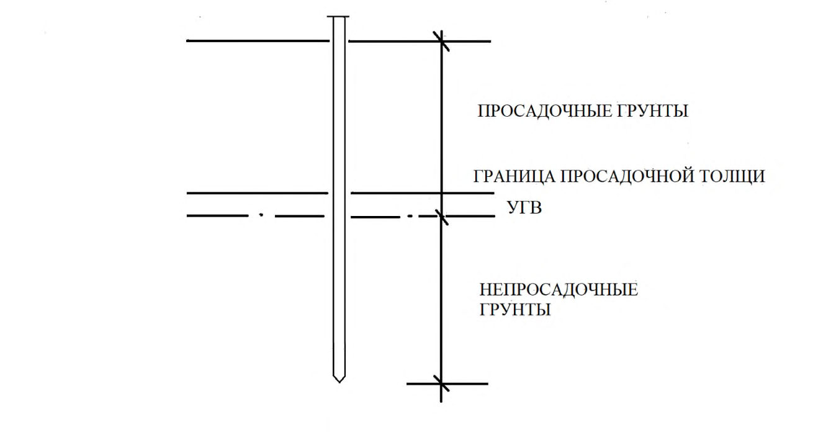
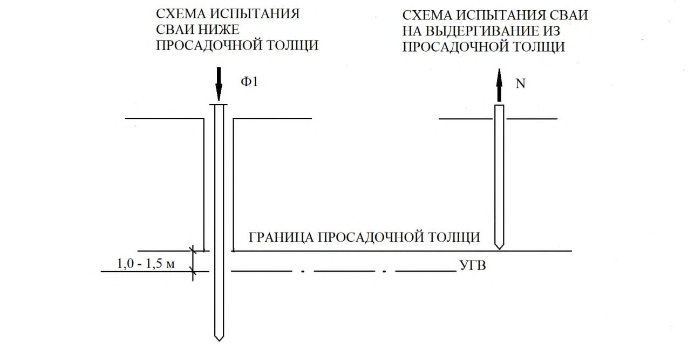
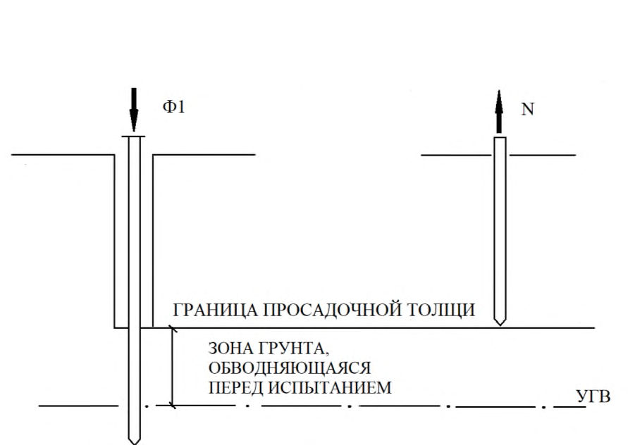
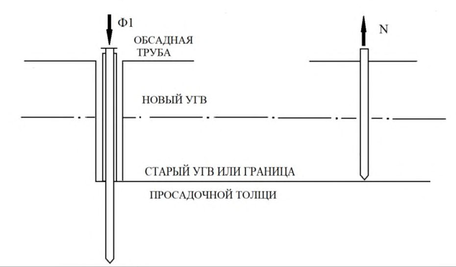
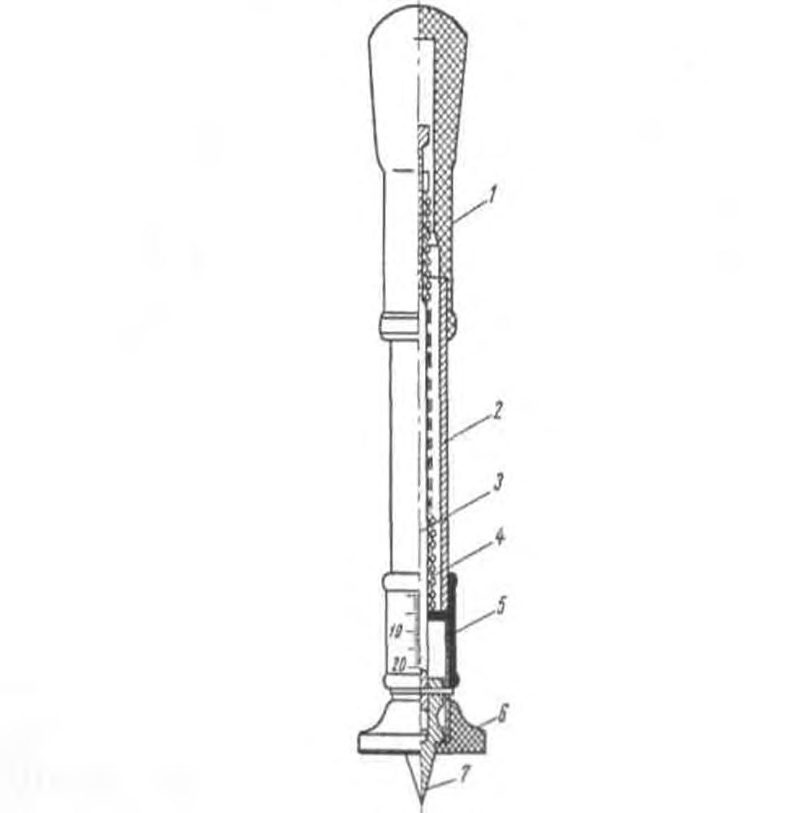
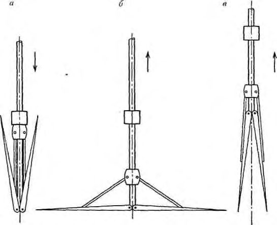

СП 448.1325800.2019 «Инженерные изыскания для строительства в районах распростра»
О документе: разработчики, утверждение, регистрация, ключевые слова
СВОД ПРАВИЛ
СП 448.1325800.2019
- 1 ИСПОЛНИТЕЛЬ - Общество с ограниченной ответственностью «Институт геотехники и инженерных изысканий в строительстве» (ООО «ИГИИС»)
2 ВНЕСЕН Техническим комитетом по стандартизации ТК 465 «Строительство»
- 3 ПОДГОТОВЛЕН к утверждению Департаментом градостроительной деятельности и архитектуры Министерства строительства и жилищно-коммунального хозяйства Российской Федерации (Минстрой России)
- 4 УТВЕРЖДЕН приказом Министерства строительства и жилищно-коммунального хозяйства Российской Федерации от 24 января 2019 г. № 39/пр и введен в действие с 25 июля 2019 г.
- 5 ЗАРЕГИСТРИРОВАН Федеральным агентством по техническому регулированию и метрологии (Росстандарт)
В случае пересмотра (замены) или отмены настоящего свода правил соответствующее уведомление будет опубликовано в установленном порядке. Соответствующая информация, уведомление и тексты размещаются также в информационной системе общего пользования - на официальном сайте разработчика (Минстрой России) в сети Интернет
© Минстрой России, 2019
Настоящий свод правил не может быть полностью или частично воспроизведен, тиражирован и распространен в качестве официального издания без разрешения Министерства строительства и жилищно-коммунального хозяйства Российской Федерации (Минстрой России)
- 1 Область применения ........................................................................................................
- 2 Нормативные ссылки .......................................................................................................
- 3 Термины и определения ..................................................................................................
- 4 Общие требования ...........................................................................................................
- 5 Инженерные изыскания в районах распространения просадочных грунтов для подготовки документов территориального планирования, документации по планировке территории и выбора площадок (трасс) строительства (обоснования инвестиций) ..........................................................................................................................
- 6 Инженерные изыскания в районах распространения просадочных грунтов для архитектурно-строительного проектирования при подготовке проектной документации объектов капитального строительства ..............................................................................
- 6.1 Инженерные изыскания в районах распространения просадочных грунтов для подготовки проектной документации объектов капитального строительства - первый этап .............................................................................................................
- 6.2 Инженерные изыскания в районах распространения просадочных грунтов для подготовки проектной документации объектов капитального строительства - второй этап ..............................................................................................................
7 Инженерные изыскания в районах распространения просадочных грунтов при
строительстве, эксплуатации и реконструкции зданий и сооружений............................. Приложение А Способы и особенности бурения инженерно-геологических скважин в районах распространения просадочных грунтов .......................................
Приложение Б Общая схема статических испытаний свай в просадочных грунтах ......
Приложение В Общая схема статических испытаний микропенетрацией в
просадочных грунтах ....................................................................................
Приложение Г Проведение иксиметрических исследований просадочных грунтов в скважине .......................................................................................................
Приложение Д Определение нормативных значений относительной просадочности просадочных грунтов ...................................................................................
Библиография ......................................................................................................................
СП 448.1325800.2019
Дата введения - 2019-07-25
УДК 624.131.23 (624.131.29)
ОКС 91.040.01
Ключевые слова: инженерные изыскания для строительства, инженерногеодезические изыскания для строительства, инженерно-геологические изыскания для строительства, просадочные грунты, лессы, просадочность, просадочная толща, район распространения просадочных грунтов, специфические характеристики просадочных грунтов, относительная деформация просадочности, относительная просадочность, начальное просадочное давление, начальная просадочная влажность
ИСПОЛНИТЕЛЬ АО «НИЦ «Строительство»
Руководитель
разработки
Генеральный директор
\_\_\_\_\_\_\_\_\_\_\_\_\_\_\_
А.В. Кузьмин
Соисполнитель ООО «ИГИИС»
Руководитель
разработки
Генеральный директор
\_\_\_\_\_\_\_\_\_\_\_\_\_\_\_
М.И. Богданов
Ответственный
исполнитель
Начальник отдела
\_\_\_\_\_\_\_\_\_\_\_\_\_\_\_
Е.В. Леденева
Введение
6 ВВЕДЕН ВПЕРВЫЕ
Настоящий свод правил разработан в целях реализации основных положений федеральных законов от 29 декабря 2004 г. № 190-ФЗ «Градостроительный кодекс Российской Федерации», от 30 декабря 2009 г. № 384-ФЗ «Технический регламент о безопасности зданий и сооружений», от 27 декабря 2002 г. № 184-ФЗ «О техническом регулировании».
При разработке свода правил были учтены требования постановлений Правительства Российской Федерации от 19 января 2006 г. № 20 «Об инженерных изысканиях для подготовки проектной документации, строительства, реконструкции объектов капитального строительства», от 31 марта 2017 г. № 402 «Об утверждении Правил выполнения инженерных изысканий, необходимых для подготовки документации по планировке территории, перечня видов инженерных изысканий, необходимых для подготовки документации по планировке территории, и о внесении изменений в постановление Правительства Российской Федерации от 19 января 2006 г. № 20», от 16 февраля 2008 г. № 87 «О составе разделов проектной документации и требованиях к их содержанию».
Свод правил по инженерным изысканиям для строительства в районах распространения просадочных грунтов разработан в развитие положений и требований СП 47.13330.2016 «СНиП 11-02-96 Инженерные изыскания для строительства. Основные положения», СП 317.1325800.2017 Инженерно-геодезические изыскания для строительства. Общие правила производства работ, СП 446.1325800.2019 Инженерногеологические изыскания для строительства. Общие правила производства работ.
Настоящий свод правил разработан ООО «ИГИИС» (руководитель работы генеральный директор, канд. геол.-минерал. наук М.И. Богданов , ответственный исполнитель -Е.В. Леденева , исполнители -Г.В. Мисник , Ю.А. Волков , И.Д. Колесников , канд. геол.-минерал. наук В.А. Елкин ) при участии канд. геол.-минерал. наук Н.М. Хансиваровой , А.О. Добровольского .
1Область применения
Настоящий свод правил устанавливает общие требования к выполнению инженерных изысканий для строительства в районах распространения просадочных грунтов для подготовки документов территориального планирования и документации по планировке территории, архитектурно-строительного проектирования, при строительстве, эксплуатации и реконструкции объектов капитального строительства.
2Нормативные ссылки
В настоящем своде правил использованы нормативные ссылки на следующие документы:
ГОСТ 2.105-95 Единая система конструкторской документации. Общие требования к текстовым документам
ГОСТ 21.301-2014 Система проектной документации для строительства. Основные требования к оформлению отчетной документации по инженерным изысканиям
ГОСТ 5686-2012 Грунты. Методы полевых испытаний сваями
ГОСТ 12071-2014 Грунты. Отбор, упаковка, транспортирование и хранение образцов
ГОСТ 12248-2010 Грунты. Методы лабораторного определения характеристик прочности и деформируемости
ГОСТ 12536-2014 Грунты. Методы лабораторного определения гранулометрического (зернового) и микроагрегатного состава
РАСПРОСТРАНЕНИЯ ПРОСАДОЧНЫХ ГРУНТОВ Общие требования
Engineering surveys for construction in the areas of occurrence of subsiding soil. General requirements
ГОСТ 19912-2012 Грунты. Методы полевых испытаний статическим и динамическим зондированием
ГОСТ 20276-2012 Грунты. Методы полевого определения характеристик прочности и деформируемости
ГОСТ 20522-2012 Грунты. Методы статистической обработки результатов испытаний
ГОСТ 23161-2012 Грунты. Метод лабораторного определения характеристик просадочности
ГОСТ 23278-2014 Грунты. Методы полевых испытаний проницаемости
ГОСТ 23740-2016 Грунты. Методы определения содержания органических веществ
ГОСТ 24846-2012 Грунты. Методы измерения деформаций оснований зданий и сооружений
ГОСТ 25100-2011 Грунты. Классификация
ГОСТ 26423-85 Почвы. Методы определения удельной электрической проводимости, рН и плотного остатка водной вытяжки
ГОСТ 30416-2012 Грунты. Лабораторные испытания. Общие положения
ГОСТ 30672-2012 Грунты. Полевые испытания. Общие положения
ГОСТ Р 21.1101-2013 Система проектной документации для строительства.
Основные требования к проектной и рабочей документации
СП 14.13330.2018 «СНиП II-7-81* Строительство в сейсмических районах»
СП 21.13330.2012 «СНиП 2.01.09-91 Здания и сооружения на подрабатываемых территориях и просадочных грунтах» (с изменением № 1)
СП 22.13330.2016 «СНиП 2.02.01-83* Основания зданий и сооружений»
СП 24.13330.2011 «СНиП 2.02.03-85 Свайные фундаменты» (с изменениями № 1, № 2, № 3)
СП 47.13330.2016 «СНиП 11-02-96 Инженерные изыскания для строительства. Основные положения»
СП 115.13330.2016 «СНиП 22-01-95 Геофизика опасных природных воздействий»
СП 317.1325800.2017 Инженерно-геодезические изыскания для строительства. Общие правила производства работ
СП 438.1325800.2019 Инженерные изыскания при планировке территорий. Общие требования
СП 446.1325800.2019 Инженерно-геологические изыскания для строительства. Общие правила производства работ
Примечание - При пользовании настоящим сводом правил целесообразно проверить действие ссылочных документов в информационной системе общего пользования - на официальном сайте федерального органа исполнительной власти в сфере стандартизации в сети Интернет или по ежегодному информационному указателю «Национальные стандарты», который опубликован по состоянию на 1 января текущего года, и по выпускам ежемесячного информационного указателя «Национальные стандарты» за текущий год. Если заменен ссылочный документ, на который дана недатированная ссылка, то рекомендуется использовать действующую версию этого документа с учетом всех внесенных в данную версию изменений. Если заменен ссылочный документ, на который дана датированная ссылка, то рекомендуется использовать версию этого документа с указанным выше годом утверждения (принятия). Если после утверждения настоящего свода правил в ссылочный документ, на который дана ссылка, внесено изменение, затрагивающее положение, на которое дана ссылка то это положение рекомендуется применять без учета данного изменения. Если ссылочный документ отменен без замены, то положение, в котором дана ссылка на него, рекомендуется применять в части, не затрагивающей эту ссылку. Сведения о действии сводов правил целесообразно проверить в Федеральном информационном фонде стандартов.
3Термины и определения
В настоящем своде правил применены термины по СП 47.13330, СП 115.13330, а также следующие термины с соответствующими определениями: Континентальные пылевато-глинистые образования различного генезиса, содержащие более 50 % пылеватых частиц по данным наличием макропор) и проявляющие просадочные свойства (при замачивании), включающие
- 3.1лессовые породы
- гранулометрического анализа (обладающие высокой пористостью, только лессы и лессовидные породы (грунты).
- 3.2лессовый псевдокарст
- Процесс гидромеханического, гравитационного, биологического и физико-химического разрушения лессовых пород при их избыточном (как правило, техногенном) увлажнении, приводящий к образованию форм рельефа, аналогичных карстовым (пещеры, провалы, воронки, колодцы, овраги, цирки и др.).
- 3.3начальная просадочная влажность wsl
- Минимальная влажность, при которой от внешней нагрузки и (или) собственного веса грунта проявляются его просадочные свойства и относительная просадочность ε sl = 0,01.Источник: ГОСТ 23161-2012, статья 3.1
- 3.4начальное просадочное давление psl
- Минимальное давление, при котором проявляются просадочные свойства грунта при его полном водонасыщении и относительная просадочность ε sl = 0,01.Источник: ГОСТ 23161-2012, статья 3.2
- 3.5относительная деформация просадочности (относительная просадочность) ε sl , д. е.
- Отношение разности высот образца (массива) грунта природной влажности и образца (массива) после его замачивания при заданном давлении к высоте образца (массива) природной влажности.
- 3.6просадочная толща
- Толща просадочных грунтов, слагающих верхнюю часть разреза различных геоморфологических элементов до кровли грунтов, не проявляющих просадочные свойства (непросадочных).
- Примечание - Мощные просадочные толщи имеют циклическое строение
- несколько горизонтов просадочных грунтов переслаиваются с погребенными почвами и непросадочными грунтами. Число циклитов непостоянно (в южных районах Российской Федерации в разрезе присутствует от трех до шести циклитов разной мощности). Как правило, в просадочной толще просадочность уменьшается сверху вниз по разрезу.
- 3.7просадочность грунта
- Способность грунтов к уменьшению объема вследствие замачивания при постоянной внешней нагрузке и (или) нагрузке от собственного веса.Источник: СП 115.13330.2016, статья 3.40
- 3.8просадочный грунт
- Грунт, который под действием внешней нагрузки и (или) собственного веса при замачивании водой претерпевает вертикальную деформацию (просадку) и имеет относительную деформацию просадки ε sl ≥ 0,01.Источник: ГОСТ 25100-2011, статья 3.33
- 3.9район распространения просадочных грунтов
- Территория (площадка, участок, трасса), в пределах которой просадочные грунты залегают в сфере взаимодействия зданий и сооружений с геологической средой и оказывают влияние на выбор проектных решений, строительство и эксплуатацию объектов.
4Общие требования
Дополнительно задание в районах распространения просадочных грунтов должно содержать:
- сведения о наблюдавшихся на исследуемой территории деформациях и аварийных ситуациях в процессе строительства и эксплуатации зданий и сооружений, связанных с наличием просадочных грунтов в их основаниях (при наличии);
- сведения о вертикальной планировке систем ливневой канализации и дренажа, покрытии территории дорожной одеждой;
- сведения о возможных источниках замачивания грунта;
- требования о выполнении локального мониторинга компонентов геологической среды на территории инженерных изысканий (если такая необходимость установлена);
- требования к содержанию и периодичности выдачи промежуточных (предварительных) отчетов по результатам инженерных изысканий для получения оперативной информации о деформациях и др.
- сведения об аварийных ситуациях, ремонтных или восстановительных работах, связанных с развитием просадочных явлений;
- сведения о применявшихся типах и конструкциях фундаментов, зданий и сооружений, их техническом состоянии, наличии и характере деформаций, вызванных просадочными явлениями;
- сведения о применявшихся при строительстве в районе работ методах полного или частичного устранения просадочности грунтов (противофильтрационные мероприятия, применение тяжелых трамбовок, искусственное закрепление грунтов, предварительное замачивание и др.) с оценкой их эффективности;
- сведения об источниках замачивания грунта с указанием расстояния от них до предполагаемого участка строительства;
- обоснование необходимости выполнения специальных видов лабораторных исследований грунтов и вод, в том числе для получения дополнительных характеристик просадочных грунтов (при указании в задании мероприятий, направленных на улучшение несущей способности просадочных грунтов);
- обоснование методов проведения локального мониторинга компонентов геологической среды, если он предусмотрен заданием;
- состав и содержание промежуточных (предварительных) отчетов о результатах инженерных изысканий, если их выпуск предусмотрен заданием.
В целях предотвращения активизации просадочных явлений необходимо предусматривать и осуществлять мероприятия, не допускающие нарушения сложившихся гидрогеологических условий при проведении отдельных видов изыскательских работ.
СП 448.1325800.2019 выполняются инженерно-геодезические, инженерно-геологические, инженерногидрометеорологические и инженерно-экологические изыскания.
- топографической съемкой в масштабах 1:5 000 - 1:200;
- нивелированием по квадратам;
- полярными засечками с пунктов геодезической основы;
- нивелированием поверхностных и/или глубинных марок;
- спутниковыми геодезическими определениями (в том числе с
СП 448.1325800.2019 использованием референцных базовых станций).
- тип I - грунтовые условия, в которых возможна в основном просадка грунтов от внешней нагрузки, а просадка грунтов от собственного веса отсутствует или не превышает 5 см;
- тип II - грунтовые условия, в которых помимо просадки грунтов от внешней нагрузки возможна их просадка от собственного веса и величина ее превышает 5 см.
Дополнительно сбору и обработке подлежат материалы изысканий прошлых лет и другие архивные, фондовые и литературные источники, содержащие сведения и данные:
- об участках современного и древнего интенсивного увлажнения, а также об участках, подвергающихся слабому промачиванию (водоразделы и их склоны, высокие речные террасы и иные геоморфологические элементы с потенциально просадочными грунтами);
- о свойствах просадочных грунтов, развитии и внешних проявлениях просадочности грунтов -характерных формах микрорельефа: просадочных блюдцах, просадочных трещинах вдоль каналов и других сооружений (распространение, формы, размеры), лессового псевдокарста;
- геологическом разрезе при многоярусном строении толщи просадочных грунтов;
- результатах инженерных изысканий и строительства, полученных при опытном замачивании толщ просадочных грунтов в разных условиях их залегания и опытных полевых работах;
- расположении и состоянии сети водонесущих коммуникаций (водопровод, канализация, теплотрасса, ливневые водостоки), очистных сооружений, существующих системах их эксплуатации и борьбы с утечками;
- наличии, системе, состоянии оросительной сети, следах древней оросительной сети;
- состоянии и характере деформаций существующих зданий и сооружений на исследуемой территории.
По результатам сбора, изучения и систематизации материалов изысканий и исследований прошлых лет для подготовки документов территориального планирования и документации по планировке территории рекомендуется составлять схематическую карту инженерно-геологического районирования (схематическую карту распространения просадочных грунтов с выделением, по возможности, территорий с предположительно различными типами грунтовых условий по просадочности).
СП 448.1325800.2019
Если между окончанием изысканий и началом проектирования разрыв во времени составляет более срока, установленного в СП 47.13330.2016 (пункт 6.1.7), возможность использования материалов изысканий прошлых лет требует специального изучения и анализа в связи с возможными изменениями в этот период состояния и свойств просадочных грунтов под воздействием различных факторов, в том числе техногенных.
Состав и объем дополнительных работ по уточнению материалов инженерногеологических изысканий в связи с давностью их получения следует устанавливать по результатам рекогносцировочного обследования исследуемой территории.
- уточнению используемых топографических карт в части выявления новых техногенных объектов (каналов, водохранилищ, карьеров и др.);
- изучению геоморфологических условий территории с выделением мезо- и микроформ рельефа (водоразделов, склонов, террас, оврагов, балок и др.);
- выявлению микроформ рельефа, генетически связанных с просадочными явлениями (просадочных блюдец, лессового псевдокарста, просадочных трещин вдоль каналов, водохранилищ, отстойников и других водоемов) в разные годы, для выявления динамики просадочного процесса.
По материалам дешифрирования следует вносить изменения в схематическую карту инженерно-геологического районирования, составленную по результатам сбора, изучения и систематизации материалов изысканий и исследований прошлых лет.
В процессе маршрутных наблюдений следует также документировать выходы
СП 448.1325800.2019 источников подземных вод, заболоченность, глубину стояния воды в колодцах в целях установления распространения и глубины положения зеркала подземных вод, определяющих нижнюю границу толщи просадочных грунтов.
Особое внимание следует уделять сбору информации об имевших место в районе предполагаемого строительства деформациях зданий и сооружений, связанных с просадками оснований, о наличии воды в подвалах зданий и сооружений, в кабельных колодцах связи и электроснабжения.
4.9.5.1 При выборе ключевых участков при рекогносцировочном обследовании следует обращать особое внимание на наличие естественных и искусственных обнажений просадочных толщ (в балках, оврагах, по берегам водохранилищ, в карьерах, выемках и пр.). При их описании следует выделять:
- отдельные горизонты просадочных грунтов и разделяющие их горизонты непросадочных грунтов, погребенных почв;
- выявлять характер перехода одних слоев грунтов в другие;
- прослеживать степень выдержанности отдельных слоев просадочных грунтов и погребенных почв в разрезе и по площади;
- устанавливать наличие и характер цикличности строения толщи в разрезе, а также особенности контакта между комплексами слоев грунтов.
Особое внимание следует уделять лессовым породам.
При описании отдельных литологических разновидностей просадочных грунтов (горизонты пород, а также разделяющих их погребенных почв, при наличии лессовых пород - горизонты лессовых и лессовидных пород, а также разделяющих их погребенных почв) в естественных и искусственных обнажениях следует изучать (описывать с зарисовками и фотографированием):
- цвет грунта и характер его изменения по разрезу;
- текстурные особенности (столбчатость, слоистость, наличие и характеристика форм, размеров, глубины проникновения кротовин, крупных корнеходов, червоходов и их количество на единицу площади, состав и плотность заполнителя);
- структурные особенности (гранулометрический состав; наличие макропор, их размеры и количество на единицу площади), наличие включений и новообразований (известковистых, железистых, выцветы и скопления солей, интенсивность вскипания от 10 %-ной соляной кислоты);
- влажность грунтов, характер контактов между отдельными слоями
(горизонтами) грунтов, наличие следов их криогенного и сейсмического нарушения, ископаемые остатки флоры и фауны.
4.9.5.2 При обследовании состояния существующих зданий и сооружений, деформированных в результате просадки грунтов, следует собирать сведения:
- о характере и величине деформаций грунтов и фундаментов зданий и сооружений;
- об источниках замачивания грунта (удаленности, продолжительности замачивания);
- о конструкции фундаментов и характере вертикальной планировки;
- системе и состоянии ливневой канализации и водонесущих инженерных сетей;
- наличии и эффективности работы дренажных систем;
- об экранировании поверхности территории;
- о противопросадочных мероприятиях, способах уплотнения, в том числе с предварительным замачиванием, закреплении грунтов основания и др.
При наличии искусственного орошения следует обследовать систему и состояние оросительной сети и получить сведения о режиме ее эксплуатации.
4.9.5.3 По результатам проведенного рекогносцировочного обследования проводят уточнение составленной на основе сбора материалов и дешифрирования аэрои космических снимков схематической карты инженерно-геологического районирования.
Виды и способы проходки горных выработок в толщах просадочных грунтов должны обеспечивать:
- изучение геолого-литологического строения и цикличности просадочной толщи;
- возможность выявления и описания их структурных и текстурных особенностей, соответствующих естественным условиям залегания;
- проведение полевых опытных работ;
- отбор образцов грунтов с ненарушенной структурой;
- отбор проб воды;
- организацию наблюдений за режимом подземных вод;
- организацию локального мониторинга.
СП 448.1325800.2019
Размещение и количество горных выработок определяется требуемой детальностью изучения инженерно-геологических условий исследуемой территории с учетом задач, решаемых при различных видах градостроительной деятельности.
Для детального визуального изучения строения толщи просадочных грунтов рекомендуется проходка горных выработок в виде шурфов или дудок, а также расчисток естественных обнажений и искусственных выемок.
4.9.6.1 Способы и разновидности бурения инженерно-геологических скважин в районах распространения просадочных грунтов устанавливаются в соответствии с приложением А.
Бурение инженерно-геологических скважин следует осуществлять всухую или с продувкой без применения промывочной жидкости или воды.
Вибрационный и шнековый способы бурения непригодны для изучения просадочных грунтов, однако при обосновании в программе работ шнековое бурение допускается использовать для устройства технических скважин на глубину для отбора монолитов с использованием задавливаемых или обуривающих грунтоносов.
4.9.6.2 Глубину инженерно-геологических скважин рекомендуется определять в зависимости: от детальности изучения инженерно-геологических условий, конструктивных особенностей объекта капитального строительства; нагрузок на основание; типа грунтовых условий по просадочности, мощности просадочной толщи.
В просадочных грунтах глубину горных выработок следует назначать в зависимости от величины сжимаемой толщи с заглублением ниже нее на 1-2 м.
При выполнении изысканий на территории с большой мощностью просадочной толщи (значительно превышающей предполагаемую величину сжимаемой толщи грунтов основания) до 30 % горных выработок следует проходить на полную глубину просадочной толщи или до глубины, где наличие просадочных грунтов не оказывает влияния на устойчивость зданий и сооружений.
4.9.6.3 Проходка инженерно-геологических выработок должна сопровождаться опробованием грунтов и подземных вод.
Бурение инженерно-геологических скважин следует сопровождать отбором монолитов с помощью грунтоносов в соответствии с требованиями ГОСТ 12071. Наиболее предпочтительным способом отбора является задавливание тонкостенного грунтоноса. Конечный диаметр бурения должен обеспечить отбор монолитов грунтов диаметром не менее 110 мм.
СП 448.1325800.2019
Рекомендуется проводить опробование во всех скважинах (при их количестве до четырех) и не менее чем в 50 % скважин при их количестве более четырех.
Отбор образцов грунта нарушенной и ненарушенной структуры проводят на всю глубину бурения, интервал опробования в просадочных разновидностях грунтов составляет 1 м; в непросадочных - 2 м.
При вскрытии водоносных горизонтов рекомендуется отбирать не менее трех проб воды на стандартный химический анализ. Объем каждой пробы должен составлять 1 л.
Отбор образцов грунта нарушенной и ненарушенной структуры в шурфах рекомендуется осуществлять с интервалом в 1 м. Рекомендуется опробовать массив в не менее чем 50 % пройденных шурфов. При использовании шурфов, пройденных для проведения опытных полевых работ, опробование проводят в соответствии со схемами, указанными в ГОСТ 20276.
Опробование должно обеспечить объем выборки, достаточный для оценки средних значений показателя свойств грунтов с учетом требуемой доверительной вероятности в соответствии с ГОСТ 20522. Для выполнения данного требования рекомендуется отбор монолитов проводить в количестве не менее 6 для каждого выделенного инженерно-геологического элемента.
- оценка мощности и однородности просадочной толщи, ее расчленение и установление кровли подстилающих грунтов;
- установление глубины залегания подземных вод, скорости и направления их движения;
- выделение зон слабых водонасыщенных грунтов, утечек из водонесущих коммуникаций, контуров обводнения при замачивании;
- обследование состояния грунтов под фундаментами зданий и сооружений;
- предварительная оценка состава, состояния и свойств грунтов (включая коррозионную агрессивность грунтов к стали).
4.9.7.1 Для расчленения толщи просадочных грунтов рекомендуется применять вертикальное электрическое зондирование (ВЭЗ), ВЭЗ по методу двух составляющих (ВЭЗ МДС), электропрофилирование (ЭП) в сочетании с сейсмоакустическими методами.
4.9.7.2 На участках размещения опытных котлованов с замачиванием, в том числе длительным, просадочных грунтов и в местах испытаний грунтов штампами с замачиванием для определения контура замачивания по площади и по глубине, а также для оценки характера его изменения во времени рекомендуется применять метод ВЭЗ с охватом прилегающей территории на расстояние не менее двукратной величины мощности просадочной толщи, а при мощности просадочной толщи, превышающей глубину сжимаемой толщи, - на расстояние не менее двукратной величины предполагаемой глубины сжимаемой толщи.
4.9.7.3 Электроразведочные методы (в частности, метод естественного электрического поля) применяются также для выявления и оконтуривания участков утечек воды из подземных коммуникаций при расположении объекта строительства на застроенной территории или в непосредственной близости от нее.
4.9.7.4 Для выявления просадочных участков, разуплотненных зон и переувлажненных грунтов в основании земляного полотна в составе инженерногеофизических исследований следует выполнять георадиолокационное профилирование и электротомографию по всей длине земляного полотна.
4.9.7.5 Результаты инженерно-геофизических исследований следует сопоставлять с данными буровых и горнопроходческих работ, зондирования, с определениями характеристик просадочных грунтов в полевых и лабораторных условиях.
4.9.7.6 Состав инженерно-геофизических исследований, объемы работ (расстояние между профилями, количество точек), тип применяемых установок следует устанавливать в программе, исходя из необходимой детальности изучения инженерно-геологических условий на соответствующем этапе градостроительной деятельности.
4.9.8.1 Выбор методов полевых исследований грунтов в районах распространения просадочных грунтов рекомендуется осуществлять в соответствии с ГОСТ 30672 с учетом:
- детальности изучения инженерно-геологических условий;
- конструктивных особенностей проектируемых зданий и сооружений, основными из которых являются: уровень ответственности; предполагаемый тип фундамента и глубина его заложения; этажность; чувствительность к неравномерным осадкам; нагрузка на грунты в основании фундамента;
- категории сложности инженерно-геологических условий;
- типа грунтовых условий по просадочности;
- возможности повышения влажности грунтов до полного водонасыщения;
- условий работы грунтов в основании зданий и сооружений или в массиве просадочных грунтов.
4.9.8.2 Испытание грунтов штампом проводят для решения следующих задач:
- определения модуля деформации грунтов при природной влажности и при водонасыщении;
- определения характеристик просадочности (относительной деформации просадочности и начального просадочного давления);
- уточнения значений модуля деформации и характеристик просадочности, полученных в лабораторных условиях.
4.9.8.3 Испытания с замачиванием проводят выше уровня подземных вод по всей толще в котловане (шурфе, дудке) штампом типа I. Схему испытаний выбирают в зависимости от комплекса характеристик, необходимых для проектирования:
- по схеме «одной кривой» (в одном шурфе или дудке) - в случаях, когда достаточно определить модуль деформации грунта природной влажности и относительную просадочность при одном заданном давлении;
- по схеме «двух кривых» (в двух шурфах или дудках) - для определения модуля деформации просадочных грунтов природной влажности и в водонасыщенном состоянии (после замачивания), начального просадочного давления и относительной деформации просадочности при различных давлениях.
Для получения значений начального просадочного давления с максимальной точностью рекомендуется испытывать просадочные грунты по схеме «одной кривой» в нескольких шурфах при различных давлениях.
4.9.8.4 При исследовании просадочных толщ применяют статическое и с соответствующим обоснованием в программе динамическое зондирование в соответствии с ГОСТ 19912 для решения следующих основных задач:
- расчленение толщи просадочных грунтов на отдельные слои, различающиеся прочностью и плотностью;
- оценка пространственной изменчивости свойств просадочных грунтов;
- определение модуля деформации;
- определение прочностных характеристик (угла внутреннего трения и сцепления);
- установление кровли грунтов, подстилающих просадочную толщу небольшой мощности (до 15 м);
- оценка изменения прочности просадочных грунтов при обводнении.
4.9.8.5 Для зданий и сооружений повышенного уровня ответственности для получения информации о характеристиках прочности просадочных грунтов кроме зондирования рекомендуется применять методы:
- вращательного среза для определения сопротивления грунта срезу, сопротивления грунта недренированному сдвигу, оценки пространственной изменчивости прочности грунтов;
- среза целиков грунта для определения сопротивления грунта срезу, угла внутреннего трения, удельного сцепления в соответствии с ГОСТ 20276.
Схему испытания грунтов следует назначать с учетом возможности перехода просадочного грунта при повышении влажности в нестабилизированное состояние и проявлении просадки.
Нестабилизированные просадочные грунты испытывают по схеме неконсолидированного (быстрого) среза; грунты, находящиеся в стабилизированном состоянии, исследуют по схеме консолидированно-дренированного (медленного) среза согласно ГОСТ 20276.
4.9.8.6 Определение несущей способности сваи должно быть выполнено в следующих случаях:
- при проектировании зданий и сооружений повышенного уровня ответственности на свайных фундаментах, возведение которых планируется на участках распространения грунтовых условий типа по просадочности II;
- для зданий и сооружений нормального уровня ответственности, проектируемых на комбинированном свайно-плитном основании в грунтах с просадочными свойствами типа II;
- при проектировании свайных фундаментов с длиной забивной сваи до 15 м.
Для последних двух пунктов испытания сваями допускается не проводить при наличии фондовых материалов и достаточном опыте строительства на хорошо изученных и освоенных городских территориях. Материалы изысканий прошлых лет должны соответствовать требованиям СП 47.13330.2016 (пункт 6.1.7).
СП 448.1325800.2019
Испытания просадочных грунтов сваями следует выполнять в соответствии с ГОСТ 5686.
4.9.8.7 Испытания просадочных грунтов динамическими, статическими, вдавливающими, выдергивающими и горизонтальными нагрузками на сваю проводят для решения следующих задач:
- оценка несущей способности сваи;
- определение предельного сопротивления грунта под нижним концом и по боковой поверхности забивной сваи;
- оценка однородности грунтов;
- установление расположения кровли грунтов, подстилающих просадочную толщу, небольшой мощности и выделения слоев грунтов, которые могут служить для заглубления в них нижних концов свай;
- оценки сопротивления свай на вдавливающую нагрузку (испытание выдергивающей и горизонтальной нагрузкой);
- оценки сил негативного трения по боковой поверхности сваи.
4.9.8.8 В программе испытаний сваями необходимо оценивать вероятность повышения влажности грунтов при выборе схемы проведения опытных работ. Если прогнозируется повышение влажности грунтов, испытания следует проводить на отдельной отведенной площадке с замачиванием грунтов до коэффициента насыщения > 0,8.
При значительной плотности застройки в пределах городских территорий допускается выполнение испытаний без замачивания на участках, где выявлены наихудшие грунтовые условия в соответствии с ГОСТ 5686-2012 (пункт 4.6). В пределах опытных участков на расстоянии 5 ≤ R ≥ 1 м для корректировки полученных результатов следует пройти контрольную скважину с отбором монолитов в интервале 1 м, а также выполнить статическое или динамическое зондирование. Отобранные монолиты должны исследоваться лабораторными методами для определения физико-механических свойств грунтов и характеристик просадочности.
Для определения несущей способности сваи на участках типа грунтовых условий по просадочности II рекомендуется проводить статическое испытание свай по общей схеме статических испытаний свай в просадочных грунтах согласно приложению Б.
4.9.8.9 На вновь осваиваемых, малоизученных территориях рекомендуется испытания штампами и сваями проводить в опытных котлованах с интенсивным и длительным замачиванием.
Для каждого предполагаемого объекта капитального строительства расположенного в черте города рекомендуется обосновывать в программе необходимость применения опытных испытаний просадочных грунтов в полевых условиях штампами и сваями в условиях замачивания, так как замачивание больших площадей в черте города приводит к увеличению влажности грунтов, нарушению гидрогеологического режима, повышению уровня грунтовых вод и многочисленным негативным последствиям.
4.9.8.10 Для предварительной оценки состояния и свойств пород, слагающих грунтовую толщу, а также для выявления грунтов с низкой прочностью, допускается использовать поверхностное зондирование пород в обнажениях микропенетрометром. По данным испытаний определяют величину предельного напряжения сдвига (приложение В).
Для приближенной оценки прочности грунтов, расчленения грунтовой толщи на слои, отличающиеся по величине сопротивления резанию, выделения ослабленных пород допускается использовать скважинный искиметр. По результатам испытаний вычисляют величину сопротивления сдвигу (приложение Г).
4.9.8.11 При проведении полевых испытаний с замачиванием вне контуров проектируемых зданий и сооружений, опытно-фильтрационных и других полевых работ в составе инженерно-геологических изысканий в районах распространения просадочных грунтов следует предусматривать и осуществлять мероприятия, направленные на сохранение сложившихся гидрогеологических условий в целях предотвращения возможности возникновения или активизации процесса просадки.
Выбор методов полевых гидрогеологических исследований должен осуществляться в соответствии с ГОСТ 30672.
СП 448.1325800.2019
При проектировании сооружений, строительство которых может повлечь за собой изменение уровня подземных вод, гидрогеологические исследования должны включать экспресс-методы.
Опытно-фильтрационные работы следует осуществлять в соответствии с ГОСТ 23278 методом налива воды в шурфы и скважины (выше уровня грунтовых вод); откачек воды из шурфов и скважин (ниже уровня грунтовых вод). Для определения коэффициента водопроницаемости рекомендуется (при необходимости) использовать расходометрию, режимные наблюдения.
- об относительной просадочности от собственного веса грунта и дополнительного напряжения от веса сооружения (при различных давлениях);
- о величине начального просадочного давления;
- значениях начальной просадочной влажности (при необходимости);
- модуле деформации грунтов в пределах разведанной глубины грунтов основания;
- коэффициенте фильтрации в зоне аэрации.
Примечание - При наличии региональных сведений коэффициент фильтрации в зоне аэрации допускается не определять.
Принадлежность грунтов к соответствующим таксономическим единицам определяется по ГОСТ 25100. Основным классификационным показателем для просадочных грунтов является относительная просадочность ε sl , которая определяется согласно ГОСТ 23161.
4.9.10.1 В соответствии с ГОСТ 30416 и ГОСТ 23161 рекомендуется метод компрессионного сжатия по следующим схемам испытаний:
- «одной кривой» - для определения относительной просадочности при заданном давлении;
- «двух кривых» - для определения относительной просадочности при различных давлениях и начального просадочного давления.
В соответствии с ГОСТ 23161 допускается проводить испытания ускоренным методом по комбинированной схеме для определения относительной просадочности ε sl при различных значениях давления на грунт и начального просадочного давления psl . Комбинированная схема применяется:
- для супесей, суглинков с числом пластичности Ip < 12-15, а также для
СП 448.1325800.2019 просадочных грунтов, не обладающих при небольших давлениях на грунт набухающими свойствами;
- при значении начального просадочного давления psl испытуемых грунтов, изменяющегося в пределах psl = 50 - 150 кПа;
- при максимальном значении заданного давления рз ≤ 3 рsl .
4.9.10.2 Для учета возможных послепросадочных деформаций рекомендуется выполнять единичные длительные компрессионные испытания (не менее 15 сут) с постоянной фильтрацией воды под заданным давлением.
4.9.10.3 Модуль деформации просадочных грунтов в лабораторных условиях рекомендуется определять для грунтов природной влажности и в водонасыщенном состоянии в компрессионных приборах (ГОСТ 23161) и приборах трехосного сжатия. Для сооружений нормального и пониженного уровней ответственности допускается определять значение модуля деформации только по результатам компрессионных испытаний, уточняя их в соответствии с СП 22.13330.2016 (пункт 5.3.6).
4.9.10.4 Прочностные характеристики просадочных грунтов рекомендуется определять методами одноплоскостного среза и трехосного сжатия при природной влажности и при полном водонасыщении. Проведение испытаний следует осуществлять в соответствии с ГОСТ 12248:
- при исключении замачивания и просадки толщи грунтов в процессе строительства и эксплуатации сооружений рекомендуется схема консолидированного медленного среза образцов грунтов природной влажности после их предварительного уплотнения заданными вертикальными давлениями;
- при возможности замачивания и просадки грунтовой толщи в процессе строительства и эксплуатации объектов испытание ведется по схеме консолидированного медленного среза образцов грунтов при полном их водонасыщении после предварительного уплотнения одним и тем же вертикальным давлением;
- для грунтов в процессе их просадки рекомендуется метод неконсолидированного быстрого среза на образцах грунтов, приведенных в водонасыщенное состояние без предварительного уплотнения (определение минимальных значений прочностных характеристик при водонасыщении).
4.9.10.5 Начальную просадочную влажность определяют для сооружений повышенного уровня ответственности на площадках (при обосновании в программе).
СП 448.1325800.2019
Испытания рекомендуется совмещать с определениями относительной просадочности по схеме «двух кривых» согласно ГОСТ 23161.
4.9.10.6 Для определения полной классификационной принадлежности просадочных грунтов, помимо перечисленных выше характеристик, согласно ГОСТ 25100 следует определять:
- гранулометрический и микроагрегатный состав в соответствии с ГОСТ 12536;
- содержание легкорастворимых солей по результатам водных вытяжек из грунтов в соответствии с ГОСТ 26423;
- содержание органического вещества в грунтах и погребенных почвах в соответствии с ГОСТ 23740;
- наличие среднерастворимых солей (гипса) по результатам солянокислых вытяжек в соответствии с ГОСТ 26423.
4.9.10.7 В районах распространения просадочных грунтов с содержанием в их составе водорастворимых минералов, превышающих по количеству установленный критерий по засоленности (ГОСТ 25100), необходимо определять суффозионную осадку.
- наличие, распространение и контуры проявления просадочных явлений: лессового псевдокарста, просадочных блюдец, подов, провальных воронок и оврагов, просадочных трещин по берегам ирригационных каналов, вокруг водоемов;
- зоны и глубины их развития;
- приуроченность просадочных явлений к определенным формам рельефа, геоморфологическим элементам, типам грунтов, гидрогеологическим условиям, видам и зонам техногенного воздействия;
- особенности развития каждого из явлений, факторы и условия развития;
- состояние и эффективность существующих сооружений инженерной защиты.
В процессе инженерно-геологической съемки определяют:
- генезис (по возможности), распространение и условия залегания просадочных грунтов, их приуроченность к определенным геоморфологическим элементам и формам рельефа;
- мощность просадочных грунтов и ее изменение по площади;
- особенности структуры и текстуры грунтов;
- проявление геологических, инженерно-геологических процессов и явлений (овраги, лессовый псевдокарст, оползни, оплывины и др.);
- зоны развития просадок, трещин различного происхождения, кротовин и ходов землероев и других нарушений целостности просадочного массива.
По результатам инженерно-геологической съемки составляют карты инженерно-геологического районирования и инженерно-геологических условий с отображением участков распространения просадочных грунтов и выделением территорий с различными типами грунтовых условий по просадочности.
- инфильтрацию производственных и/или поверхностных вод (особенно при локальном замачивании);
- нарушение природных условий испарения при застройке и асфальтировании территории (экранирование поверхности) и увеличение влажности грунтов, в том числе при повышении уровня подземных вод;
- изменения водно-теплового режима за счет сезонных климатических факторов и воздействия тепловых источников.
Результатами прогноза являются качественная или количественная (в зависимости от вида градостроительной деятельности и этапа инженерных изысканий) оценка степени развития просадочных явлений территории и оценка изменения свойств просадочных грунтов при строительстве и эксплуатации зданий и сооружений.
В связи с тем, что просадочные грунты являются структурно-неустойчивыми, легкоразмокаемыми и наибольшие изменения претерпевают от воздействия воды, разработку прогноза следует выполнять с учетом проявлений и активизации опасных геологических (инженерно-геологических) процессов, обусловленных действием
СП 448.1325800.2019 подземных и поверхностных вод, а также процессов, вызванных действием сил гравитации (оползни и др.).
Количественный прогноз изменения состояния и свойств просадочных грунтов выполняется на основе моделирования процессов воздействия природных и техногенных факторов на просадочный массив. Рекомендуется применять следующие виды моделирования: физическое, инженерно-геологических аналогий, математическое.
По результатам изысканий должны быть даны рекомендации по учету основных особенностей просадочных грунтов (просадочного процесса) при освоении территории и проектировании объектов капитального строительства.
Наблюдения ведут в целях получения необходимой и достаточной информации для оценки степени опасности просадочных явлений, составления прогноза их дальнейшего развития, обоснования проекта защитных или иных мероприятий. Перечень наблюдаемых параметров, методика и частота наблюдений устанавливаются в программе мониторинга.
4.9.15.1 Размещение наблюдательных пунктов должно производиться на участках:
- существующих внешних природных и техногенных источников замачивания грунтов (водонесущих коммуникаций, проектируемых зданий и сооружений с мокрым технологическим процессом и др.);
- распространения типа грунтовых условий по просадочности II;
- высокой степени изменчивости сжимаемости просадочных грунтов (СП 21.13330);
- распространения просадочных грунтов, модуль деформации которых при природной влажности и полном водонасыщении имеет значения ниже 5 МПа;
- развития опасных геологических процессов и явлений, вызванных особенностями просадочных грунтов.
4.9.15.2 Наблюдения за динамикой изменения влажности просадочных грунтов в зоне аэрации (по глубине и во времени) на характерных участках инфильтрации поверхностных вод, вблизи размещения сооружений повышенного уровня ответственности могут выполняться геофизическими методами (электрометрия, радиоактивный каротаж) или путем определения влажности в лабораторных условиях по образцам грунтов, отбираемым в различные сезоны года из специально пробуренных и оборудованных для этих целей скважин.
4.9.15.3 Наблюдения за осадками (просадками) поверхности земли и грунтов оснований фундаментов осуществляются с применением поверхностных и глубинных марок в период строительства, реконструкции и эксплуатации зданий и сооружений.
4.9.15.4 Локальный мониторинг для уточнения величины просадки грунтов от их собственного веса следует осуществлять на вновь осваиваемых площадках массовой застройки на участках с типом грунтовых условий по просадочности II путем опытного замачивания котлованов. Количество этих опытов обосновывается в программе мониторинга.
В необходимых случаях по специальной программе выполняются стационарные наблюдения за развитием геологических процессов, связанных с проявлением просадочных свойств грунтов.
5 Инженерные изыскания в районах распространения просадочных грунтов для подготовки документов территориального планирования, документации по планировке территории и выбора площадок (трасс) строительства (обоснования инвестиций)
5.1 Инженерные изыскания для подготовки документов территориального планирования, документации по планировке территории и выбора площадок (трасс) строительства (обоснования инвестиций) должны обеспечивать получение сведений о природных и техногенных условиях территории распространения просадочных грунтов, необходимых и достаточных для принятия решений о функциональном назначении территорий, в целях обеспечения их устойчивого развития, сохранения окружающей среды, создания условий для привлечения инвестиций, выделения элементов планировочной структуры, установления границ земельных участков и зон планируемого размещения объектов федерального, регионального, муниципального значения, защиты территорий от чрезвычайных ситуаций природного и техногенного характера.
Для решения данных задач выполняются инженерно-геодезические, инженерно-геологические, инженерно-гидрометеорологические и инженерноэкологические изыскания.
При планировании хозяйственного освоения территории для предварительной оценки возможности развития просадочных явлений рекомендуется использовать карту распространения просадочных грунтов на территории Российской Федерации, приведенную в СП 115.13330.2016 (рисунок Б.7 приложения Б).
5.2 Инженерно-геодезические изыскания для подготовки документов территориального планирования, документации по планировке территории и выбора площадок (трасс) строительства в районах распространения просадочных грунтов выполняются в соответствии с требованиями СП 47.13330.2016 (пункт 5.2), СП 317.1325800.2017 (раздел 6), СП 438.1325800 и настоящего свода правил в целях получения актуальных инженерно-топографических планов, инженерных цифровых моделей местности, каталогов координат и высот геодезических пунктов и других объектов местности, обеспечивающих потребности планирования развития территорий.
5.3 При инженерно-геологических изысканиях для подготовки документов территориального планирования, документации по планировке территории и выбора площадок (трасс) строительства (обоснования инвестиций) в районах распространения просадочных грунтов дополнительно к требованиям СП 47.13330.2016 (подраздел 6.2), СП 115.13330.2016, СП 438.1325800, СП 446.1325800.2019 (раздел 6) следует устанавливать:
- распространение и условия залегания просадочных грунтов, их приуроченность к определенным типам рельефа и геоморфологическим элементам; - наличие просадочных явлений, их масштабность, формы проявления;
- геолого-литологическое строение и характерные особенности грунтов, слагающих просадочную толщу;
- опыт строительства и эксплуатации существующих объектов на просадочных грунтах.
5.3.1 Основные виды работ и комплексных исследований, входящие в состав инженерно-геологических изысканий для подготовки документов территориального планирования в районах распространения просадочных грунтов, определяются в соответствии с СП 446.1325800.2019 (подраздел 6.2) и выполняются с учетом дополнительных требований 4.9.
5.3.1.1 В составе инженерно-геологических изысканий для подготовки документов территориального планирования в районах распространения просадочных грунтов выполняются:
- сбор, изучение и систематизация материалов изысканий и исследований прошлых лет, оценка возможности их использования при выполнении полевых и камеральных работ;
- дешифрирование аэро- и космических материалов;
- рекогносцировочное обследование при недостаточности собранных материалов изысканий прошлых лет, аэро- и космических материалов и других данных для подготовки документов территориального планирования.
5.3.1.2 При сборе и обобщении материалов изысканий и исследований прошлых лет дополнительно следует анализировать результаты инженерногеодезических наблюдений за деформациями зданий и сооружений, а также сведения о региональном опыте строительства и эксплуатации на просадочных грунтах.
5.3.1.3 Дешифрирование аэро- и космических материалов должно быть направлено на выявление геоморфологических особенностей территории с выделением основных форм мезорельефа (водоразделы, склоны водоразделов, разновысотные террасы, балки, овраги, поды и пр.), а также характерных форм микрорельефа, свидетельствующих о развитии просадочных явлений.
5.3.1.4 Для оценки наличия и масштаба проявления геологических и инженерно-геологических процессов в районах распространения просадочных грунтов (образование просадочных блюдец, подов, провальных воронок и оврагов, просадочных трещин по берегам ирригационных каналов, вокруг водоемов и др.) рекомендуется использовать результаты анализа картографических, аэрои космических материалов с установлением по ним размера и интенсивности проявления процессов (площадная, линейная пораженность территории). Следует также выявлять взаимосвязи между внешними формами проявления процессов и характеристиками просадочных толщ (мощность, относительная просадочность).
5.3.1.5 При отсутствии или недостаточности собранных материалов и результатов дешифрирования следует выполнять рекогносцировочное обследование в составе и объеме, необходимых для получения недостающих сведений и данных.
5.3.1.6 При инженерно-геологическом картировании исследуемой территории следует выделять участки развития просадочных явлений, оконтуривать площади распространения просадочных грунтов, модуль деформации которых при природной влажности и при полном водонасыщении имеет значения ниже 5 МПа, а также выделять участки с наличием близкого уровня залегания подземных вод.
5.3.1.7 На мелкомасштабных инженерно-геологических картах их следует обозначать внемасштабным знаком, на среднемасштабных инженерногеологических картах - контурами, с указанием типов грунтовых условий по просадочности (при возможности отображения в масштабе карты). Масштабы карт устанавливаются заданием или в соответствии с СП 47.13330.2016 (приложение Б).
Примечание -Преобладающие типы грунтовых условий по просадочности рекомендуется предварительно устанавливать на основе общих геологических признаков, материалов ранее выполненных изысканий и исследований, местного опыта строительства и уточнять в дальнейшем после проведения изысканий по всей глубине просадочной толщи.
5.3.1.8 Качественный прогноз изменений инженерно-геологических условий для подготовки документов территориального планирования в районах распространения просадочных грунтов следует осуществлять на основе обобщения материалов инженерных изысканий прошлых лет с учетом результатов выполненных работ. Необходимо выявлять и оконтуривать участки:
- распространения опасных геологических процессов;
- с прогнозируемым резким повышением уровня грунтовых вод;
- распространения предположительно просадочных грунтов.
5.3.1.9 Состав и содержание технического отчета по результатам выполненных инженерно-геологических изысканий для подготовки документов территориального планирования должны соответствовать требованиям СП 47.13330.2016 (пункты 4.39, 6.2.1.2).
Технический отчет по результатам выполненных инженерно-геологических изысканий для подготовки документов территориального планирования в районах распространения просадочных грунтов дополнительно должен содержать сведения:
- о распространении и приуроченности просадочных грунтов к определенным геоморфологическим элементам и формам рельефа;
- наличии внешних признаков проявления просадочности грунтов (просадочные блюдца, поды, ложбины и пр.);
- наличии и характере возможных источников замачивания просадочной толщи;
- об аварийных ситуациях, ремонтных или восстановительных работах, связанных с развитием просадочных процессов.
5.3.2 Основные виды работ и комплексных исследований, входящие в состав инженерно-геологических изысканий для подготовки документации по планировке территории в районах распространения просадочных грунтов, определяются в соответствии с [1], СП 438.1325800, СП 446.1325800.2019 (подраздел 6.3), с учетом дополнительных требований 4.9.
При наличии требования в задании в составе инженерно-геологических изысканий может выполняться локальный мониторинг компонентов геологической среды в соответствии с 4.9.15.
5.3.2.1 На ключевых участках, выбранных при рекогносцировочном обследовании (инженерно-геологической съемке) для построения опорного инженерно-геологического разреза и составления общей характеристики инженерно-геологических условий участка, могут выполняться:
- проходка инженерно-геологических выработок с их опробованием;
- инженерно-геофизические исследования;
- гидрогеологические исследования;
- лабораторные исследования свойств грунтов и химический анализ подземных вод;
- изучение опасных геологических и инженерно-геологических процессов;
- полевые исследования грунтов (выполняются при необходимости, обоснованной в программе).
Результаты изысканий на ключевом участке экстраполируются на всю площадь геоморфологического элемента.
- 5.3.2.2 Количество инженерно-геологических выработок следует определять в соответствии с требованиями СП 446.1325800.2019 (пункт 6.3.10) в зависимости от
СП 448.1325800.2019 масштаба съемки и категории сложности инженерно-геологических условий, определяемой в соответствии с СП 47.13330.2016 (приложение Г). Глубина инженерно-геологических скважин определяется в соответствии с 4.9.6.2.
На участках развития проявлений просадочного процесса (просадочные блюдца, суффозионно-просадочные воронки и т. д.) допускается проходка дополнительных горных выработок (независимо от масштаба съемки) для уточнения границ этих участков.
Проходку инженерно-геологических выработок следует выполнять для:
- составления опорного разреза на ключевых участках;
- опробования грунтов для лабораторных испытаний;
- определения глубины залегания грунтовых вод и грунтов, подстилающих просадочную толщу.
5.3.2.3 Отбор, упаковку и транспортирование проб ненарушенной структуры просадочных грунтов следует осуществлять в соответствии с ГОСТ 12071. Опробование просадочных толщ (отбор монолитов, образцов) следует выполнять с помощью грунтоносов нормального ряда применительно к выделенным инженерногеологическим элементам.
5.3.2.4 Инженерно-геофизические исследования выполняются в соответствии с 4.9.7. Количество профилей и точек геофизических наблюдений определяется масштабом инженерно-геологической съемки и устанавливается в соответствии с СП 446.1325800.2019 (таблица 6.1 и приложение Д). На выделенных аномальных участках сеть наблюдений сгущается.
Полученные с помощью инженерно-геофизических исследований данные должны сопоставляться с данными, полученными при проходке инженерногеологических выработок, а также при полевых и лабораторных исследованиях.
5.3.2.5 Необходимость выполнения полевых исследований грунтов на данном этапе изысканий, их методы и объемы обосновываются в программе с учетом сложности инженерно-геологических условий исследуемой территории.
Для оценки пространственной изменчивости свойств грунтов допускается выполнение статического и (или) динамического зондирования в соответствии с ГОСТ 19912.
Для предварительной оценки состояния и свойств пород, слагающих грунтовую толщу, выявления грунтов с низкой прочностью, определения величины предельного напряжения сдвига допускается применять экспресс-методы (4.9.8.10).
СП 448.1325800.2019
5.3.2.6 Условия залегания водоносных горизонтов, химический состав подземных вод определяются по результатам сбора и анализа фондовых материалов, рекогносцировочного обследования территории, бурения инженерногеологических скважин, инженерно-геофизических и лабораторных исследований.
Гидрогеологические параметры водоносного горизонта устанавливаются по объектам-аналогам, справочным, фондовым и опубликованным материалам, а также по результатам лабораторных и инженерно-геофизических исследований.
5.3.2.7 Лабораторные исследования просадочных грунтов выполняются в соответствии с 4.9.10.
Необходимость определения петрографического, минералогического и химического состава грунтов обосновывается в программе.
Предварительную оценку нормативных значений относительной деформации просадочности ε sl грунтов при инженерно-геологических изысканиях для подготовки документации по планировке территории в районах распространения просадочных грунтов допускается выполнять в соответствии с приложением Д.
5.3.2.8 При выполнении качественного прогноза изменений инженерногеологических условий для подготовки документации по планировке территории в районах распространения просадочных грунтов следует подтвердить наличие просадочных свойств, выявленных на предыдущем этапе, и выявить тип грунтовых условий по просадочности лабораторными методами.
5.3.2.9 Технический отчет по результатам инженерно-геологических изысканий для подготовки документации по планировке территории должен соответствовать требованиям СП 47.13330.2016 (пункт 6.2.2.3) и дополнительно содержать сведения:
- о распространении и приуроченности просадочных грунтов к определенным геоморфологическим элементам или типам рельефа, характеристике специфических форм рельефа;
- разделении просадочных толщ на отдельные слои, а в случае лессовых - с учетом выявленной цикличности их строения, характеристике выделенных литологических разновидностей грунтов, в том числе погребенных почв и условий их распространения, наличии карбонатных и гипсовых образований, кротовин и др., мощности просадочной толщи;
- результатах лабораторных определений показателей просадочности и характере их изменений по площади и глубине, а также о прогнозируемой (на их основе) возможной максимальной просадке грунтов под действием собственного веса и при полном водонасыщении, типе грунтовых условий по просадочности (распределение по площади);
- об опыте эксплуатации существующих зданий и сооружений, дополняющие информацию о просадочных грунтах как основаниях;
- оценке опасности процессов, связанных с просадочностью грунтов, для установления возможности и целесообразности строительного освоения территории и определения характера планировочных и защитных мероприятий.
В составе графической части технического отчета должны содержаться:
- схематическая карта инженерно-геологического районирования масштаба 1:25 000-1:5 000 с отражением на ней мощности просадочных грунтов и их возможной просадки от собственного веса и выделением на ней участков с разным типом грунтовых условий по просадочности (I и II);
- графики изменения с глубиной значений относительной деформации просадочности от собственного веса при полном водонасыщении, начального просадочного давления, а также зависимости относительной деформации просадочности от давления;
- графики возможных значений просадки в зависимости от мощности просадочной толщи (с вычислением значений просадки); выделение участков с различными значениями просадки (до 5 см, от 5 до 15 см, от 15 до 30 см и более 30 см);
- листы обработки результатов замачивания просадочных грунтов в опытном котловане (если оно проводилось) - графики суточного и общего расхода воды и осадки глубинных и поверхностных марок во времени; графики просадки и относительной деформации просадочности отдельных слоев грунтов по глубине, а также линии равных просадок поверхности грунта в пределах опытного котлована и за его пределами и поперечные профили просадки поверхности грунта.
При необходимости в технический отчет следует также помещать другие материалы обработки результатов изысканий, отражающие специфические особенности и особые свойства просадочных грунтов, если они представляют интерес для их комплексной оценки и учета при проектировании.
5.3.3 Основные виды работ и комплексных исследований, входящие в состав инженерно-геологических изысканий для выбора площадок (трасс) строительства
СП 448.1325800.2019
(обоснования инвестиций) в районах распространения просадочных грунтов, определяют в соответствии с СП 446.1325800.2019 (подраздел 6.4) и 5.3.2.
5.3.3.1 Для выбора вариантов площадок (трасс) строительства на ключевых участках каждого конкурентного варианта размещения объекта выполняют работы и комплексные исследования в соответствии с требованиями 5.3.2.1, анализируют инженерно-геологические условия территории размещения площадок (трасс), обосновывают выбор оптимального по инженерно-геологическим условиям варианта размещения площадки строительства и (или) трассы линейного сооружения.
5.3.3.2 Состав и содержание технического отчета по результатам инженерногеологических изысканий для выбора площадок (трасс) строительства должны соответствовать требованиям 5.3.2.9 и дополнительно содержать:
- характеристику инженерно-геологических условий конкурентных вариантов размещения площадок и (или) трасс (в том числе наличие, распространение просадочных грунтов и их свойства);
- сопоставительную оценку вариантов площадок (трасс) по степени благоприятности для строительного освоения с учетом возможного воздействия просадочных явлений на объекты капитального строительства;
- обоснование выбора оптимального по инженерно-геологическим условиям варианта размещения площадки строительства и (или) трассы линейных сооружений.
5.4 Инженерно-гидрометеорологические изыскания для подготовки документов территориального планирования, документации по планировке территории и выбора площадок (трасс) строительства в районах распространения просадочных грунтов выполняются в соответствии с требованиями СП 47.13330.2016 (подраздел 7.2), СП 438.1325800.2019 (раздел 7).
5.5 Инженерно-экологические изыскания для подготовки документов территориального планирования, документации по планировке территории и выбора площадок (трасс) строительства в районах распространения просадочных грунтов выполняются в соответствии с требованиями СП 47.13330.2016 (подраздел 8.2), СП 438.1325800.2019 (раздел 8).
6 Инженерные изыскания в районах распространения просадочных грунтов для архитектурно-строительного проектирования при подготовке проектной документации объектов капитального строительства
Инженерные изыскания для подготовки проектной документации объектов капитального строительства в соответствии с СП 47.13330.2016 (пункт 4.30) выполняются в один или два этапа.
На первом этапе инженерные изыскания выполняют в целях комплексного изучения природных условий выбранной площадки (трассы), обоснования компоновки зданий и сооружений, принятия конструктивных и объемнопланировочных решений, составления генерального плана проектируемого объекта, оценки влияния просадочных явлений на проектируемые здания и сооружения, разработки мероприятий по инженерной защите сооружений.
На втором этапе инженерных изысканий выполняется уточнение данных о составе, состоянии и свойствах грунтов, слагающих массив, в том числе нормативные и расчетные характеристики свойств грунтов в пределах сферы взаимодействия здания или сооружения с геологической средой, получение дополнительных данных для оптимизации конструктивных параметров здания или сооружения и детализации проектных решений по инженерной защите сооружений.
Инженерные изыскания выполняются в один этап, если имеющихся материалов и данных о просадочных грунтах как основаниях зданий и сооружений достаточно для обоснования компоновки зданий и сооружений, принятия конструктивных и объемно-планировочных решений, составления генерального плана проектируемого объекта, а также принятия проектных решений по его инженерной защите.
6.1 Инженерные изыскания в районах распространения просадочных грунтов для подготовки проектной документации объектов капитального строительства - первый этап
6.1.1 Инженерно-геодезические изыскания на первом этапе для подготовки проектной документации объектов капитального строительства в районах распространения просадочных грунтов выполняют в соответствии с СП 317.1325800.2017 (подраздел 7.1) и настоящим сводом правил.
6.1.1.1 В случае если заданием предусмотрен локальный мониторинг компонентов геологической среды, в составе инженерно-геодезических изысканий на первом этапе в соответствии с программой дополнительно выполняют:
- закрепление на местности геодезических пунктов исходной и наблюдательной (деформационной) сетей;
- топографическую съемку участка распространения просадочных грунтов в масштабе 1:5 000 - 1:500 и высотой сечения рельефа согласно СП 47.13330.2016 (приложение В);
- начальный цикл наблюдений за смещениями просадочных грунтов методами (4.8.6, 4.8.7), установленными в программе;
- вынос на местность и планово-высотную привязку инженерно-геологических выработок и точек наблюдений;
- составление промежуточного отчета (4.8.10).
6.1.2 Инженерно-геологические изыскания для подготовки проектной документации объектов капитального строительства на первом этапе в районах распространения просадочных грунтов выполняются в соответствии с СП 446.1325800.2019 (подраздел 7.1) и настоящим сводом правил.
6.1.2.1 При инженерно-геологических изысканиях в районах распространения просадочных грунтов дополнительно следует устанавливать:
- распространение и приуроченность просадочных грунтов к определенным геоморфологическим элементам или формам рельефа;
- мощность просадочной толщи, ее разделение на отдельные слои, с учетом выявленной цикличности;
- особенности проявления просадочных явлений и интенсивность их развития;
- особенности структуры и текстуры просадочных грунтов;
- состав, состояние и свойства грунтов по выделенным инженерногеологическим элементам;
- нормативные и расчетные значения характеристик просадочности, прочностных и деформационных свойств просадочных грунтов при природной влажности и в водонасыщенном состоянии (по выделенным инженерногеологическим элементам для обоснования выделения расчетных грунтовых элементов и построения расчетной геомеханической модели площадки изысканий);
- тип грунтовых условий по просадочности;
СП 448.1325800.2019
- возможные изменения режима подземных вод в результате строительного освоения территории, приводящие к замачиванию просадочных толщ и проявлению просадочных явлений;
- наличие источников древнего или современного орошения или замачивания;
- характер деформаций существующих зданий и сооружений, вызванных просадкой грунтов в их основании;
- рекомендации для учета при проектировании основных особенностей распространения, неоднородности строения и свойств просадочных грунтов.
6.1.2.2 Для подготовки проектной документации объектов капитального строительства в районах распространения просадочных грунтов основные виды работ и комплексных исследований, входящие в состав инженерно-геологических изысканий на первом этапе, необходимо определять в соответствии с СП 446.1325800.2019 (пункт 7.1.2) и выполнять с учетом дополнительных требований 4.9.
6.1.2.3 Инженерно-геологическую съемку следует выполнять в соответствии с СП 446.1325800.2019 (пункт 7.1.7) в масштабе 1:5 000 - 1:2 000.
Детальные крупномасштабные съемки (1:1 000) следует предусматривать при сложном строении толщ просадочных грунтов, неоднородности грунтов по просадочности, наличии многочисленных внешних проявлений просадочности грунтов при соответствующем обосновании в программе.
Инженерно-геологическую съемку проводят с учетом выполненных работ на предыдущих этапах. Если результаты работ соответствуют требуемому масштабу съемки, то проводят инженерно-геологическую рекогносцировку в целях выявления происшедших изменений характеристик просадочности грунтов и детализации условий на участках развития геологических и инженерно-геологических процессов.
6.1.2.4 Границы территории, охватываемой инженерно-геологической съемкой, и глубину изучения просадочной толщи рекомендуется устанавливать с учетом типа проектируемого объекта капитального строительства и имеющихся на территории или в непосредственной близости существующих и (или) потенциальных источников замачивания просадочных грунтов.
6.1.2.5 Количество точек наблюдений, в том числе инженерно-геологических выработок на 1 км² площади, следует устанавливать в зависимости от масштаба инженерно-геологической съемки с учетом сложности инженерно-геологических условий территории в соответствии с СП 446.1325800.2019 (пункт 7.1.7).
СП 448.1325800.2019
Для линейных сооружений ширину притрассовой полосы и среднее расстояние между инженерно-геологическими скважинами следует принимать в соответствии с СП 446.1325800.2019 (таблица 7.2).
6.1.2.6 Проходку горных выработок следует осуществлять в соответствии с 4.9.6. Горные выработки следует размещать с учетом расположения геоморфологических элементов и микроформ рельефа.
6.1.2.7 Для детального описания разреза просадочной толщи и более представительного опробования часть горных выработок следует проходить шурфами (дудками) по возможности на всю толщу просадочных грунтов, но не глубже 20 м.
Проходка шурфов должна предусматриваться на наиболее характерных участках основных элементов рельефа (с учетом микрорельефа) в местах с предполагаемыми максимальными и минимальными значениями относительной деформации просадочности грунтов (один-два шурфа на участке). Количество участков обосновывается в программе с учетом результатов работ на предыдущих этапах.
По проектируемым трассам линейных трубопроводов нормального уровня ответственности в грунтовых условиях типа по просадочности I допускается ограничивать глубину скважин глубиной на 5 м ниже проектируемой глубины укладки трубопровода. На каждом морфологическом элементе в полосе проектируемой трассы проходят одну-две опорные скважины с обоснованием в программе изысканий.
6.1.2.8 Опробование толщ просадочных грунтов (отбор монолитов) следует осуществлять применительно к выделенным по макроскопическим особенностям литологическим разновидностям грунтов (изменению цвета, характера структуры и распределения карбонатов, текстуры и др.) с учетом расчленения ее горизонтами погребенных почв, но не реже 1 м по глубине. Отбор монолитов (образцов) из погребенных почв следует осуществлять по их генетическим горизонтам.
Способы отбора монолитов грунта, их упаковка, транспортирование и хранение должны обеспечивать сохранность природной структуры и влажности и осуществляться в соответствии с ГОСТ 12071, при этом опробуется не менее 50 % выработок.
6.1.2.9 Инженерно-геофизические исследования следует выполнять в соответствии с требованиями СП 446.1325800.2019 (пункт 7.1.13) и с учетом 4.9.7.
СП 448.1325800.2019
6.1.2.10 В состав комплекса методов полевых опытных работ включают испытания вертикальной статической нагрузкой на штамп, прессиометрами, статическое и динамическое зондирование в соответствии с требованиями 4.9.8.
Определение характеристик просадочности грунтов (начального просадочного давления и относительной деформации просадочности) полевыми методами (вертикальной статической нагрузкой на штамп) следует выполнять для зданий и сооружений повышенного и нормального уровней ответственности с плитным или комбинированным свайно-плитным типом фундаментов при их проектировании на естественном основании в целях сопоставления значений характеристик, полученных при лабораторных исследованиях. Если на площадке изысканий выделены участки с разными типами грунтовых условий по просадочности, то испытания штампами следует выполнять на каждом характерном по просадочным свойствам участке.
Модули деформаций просадочных грунтов должны определяться как при их полном водонасыщении, так и при природной влажности для оценки степени изменчивости деформационных свойств просадочных грунтов при возможности их замачивания.
Пункты испытаний просадочных грунтов штампами для определения значений относительной деформации просадочности при различных давлениях, начального просадочного давления и модулей деформации грунтов при природной влажности и в водонасыщенном состоянии рекомендуется располагать вблизи (на расстоянии 3 м) от опробуемых инженерно-геологических скважин.
6.1.2.11 Для оценки пространственной изменчивости свойств просадочных грунтов и установления положения кровли подстилающих просадочные грунты (при небольшой их мощности) отложений следует предусматривать динамическое и (или) статическое зондирование.
Для проектируемых зданий и сооружений на свайных или ленточных фундаментах допускается проводить статическое зондирование ручным пенетрометром для определения относительной просадочности грунта при обосновании в программе. Результаты испытаний следует уточнять лабораторными исследованиями относительной просадочности в компрессионных приборах по ГОСТ 12248 и ГОСТ 23161. Статическое зондирование ручным пенетрометром проводят с поверхности дна шурфа по мере его прохождения. Размеры шурфа в плане должны быть не менее 0,8 × 1 м или диаметром d ≥ 0,9 м [2].
При проведении изысканий на вновь осваиваемых и малоизученных территориях по специально разработанной программе для уточнения типа грунтовых условий по просадочности, мощности просадочных грунтов и значения величины начального просадочного давления при полном водонасыщении, установленных по результатам лабораторных исследований, необходимо обосновывать проведение испытаний с замачиванием просадочных грунтов в опытных котлованах. Опытный котлован следует располагать в местах с прогнозируемой максимальной просадкой.
Опытные котлованы, в которых предусматривается длительное (в течение 1 - 3 мес) замачивание грунтов, следует сооружать с размерами сторон, равными величине просадочной толщи (но не менее 15 × 15 м), глубиной 0,2-0,4 м, с устройством дренирующих скважин (при толщине слоя просадочных грунтов более 10 м) глубиной не менее 0,4 и не более 0,8 просадочной толщи, а также поверхностных (по двум-четырем поперечникам через 2-4 м одна от другой) и глубинных марок (через 2-3 м по глубине) в пределах котлована и за его пределами (на расстоянии двукратного значения просадочной толщи).
В процессе опытного замачивания следует фиксировать количество заливаемой воды и осадки глубинных и поверхностных марок во времени по результатам их нивелирования. При замачивании просадочных грунтов с поверхности дна котлована рекомендуется определять контур замачивания грунта в плане и по глубине.
После завершения опытного замачивания просадочных грунтов в котловане при достижении условной стабилизации процесса просадки необходимо определить реологические характеристики: продолжительность проявления просадки в сутках и скорость ее развития в сантиметрах в сутки и выполнять комплекс работ по определению характеристик состава, состояния и свойств (в том числе прочностных и деформационных) замоченной толщи грунтов с использованием методов лабораторных и полевых исследований.
Опытное замачивание грунтов в котлованах по ускоренной схеме выполняют при соответствующем обосновании условий проведения испытаний.
Повышение скорости замачивания котлованов достигается устройством по периметру опытного котлована прорезей (или часто расположенных скважин) на всю или преобладающую часть (0,8) толщины слоя просадочных грунтов с засыпкой скважин и прорезей в грунте дренирующим материалом.
СП 448.1325800.2019
Испытания по замачиванию просадочных грунтов в опытных котлованах выполняют по специально разработанной программе с привлечением проектной организации, разрабатывающей проектную документацию объекта строительства, и (или) научно-исследовательской организации.
6.1.2.12 Гидрогеологические исследования следует выполнять с учетом требований СП 446.1325800.2019 (пункт 7.1.15) и 4.9.9.
На данном этапе изысканий в районах распространения просадочных грунтов выявляют источники их обводнения и определяют направление и скорость движения подземных вод и водопроницаемость пород.
Определение водопроницаемости (коэффициента фильтрации) просадочных грунтов в зоне аэрации рекомендуется проводить не менее чем в трех пунктах по каждому из выделенных инженерно-геологических элементов.
Пункты наливов воды следует располагать в местах с наибольшей мощностью просадочной толщи и максимальной ожидаемой просадкой грунтов (тип грунтовых условий по просадочности II).
Гидрохимическое опробование скважин в процессе проведения любого вида откачек является обязательным.
6.1.2.13 Лабораторные исследования образцов грунтов и определение химического состава подземных вод и водных вытяжек из грунтов следует осуществлять в соответствии с требованиями СП 446.1325800.2019 (пункт 7.1.16) и с учетом 4.9.10.
Лабораторные определения характеристик просадочности грунтов и их сжимаемости выполняют по ГОСТ 23161, ГОСТ 12248 и ГОСТ 30416, при этом рекомендуется по отдельным (контрольным) образцам, количество которых обосновывается в программе, определять относительную просадочность при длительном их водонасыщении под заданным давлением (не менее 15 сут) для установления величины замедленной просадки в целях учета при анализе возможных значений просадок.
Определение прочностных характеристик просадочных грунтов методом одноплоскостного среза по схемам консолидированно-дренированного или неконсолидированного срезов при природной и (или) заданной влажности, а также в условиях полного водонасыщения должно выполняться по ГОСТ 12248 в объеме, обеспечивающем статистическую обработку результатов этих исследований по ГОСТ 20522.
Количество определений одноименных характеристик грунтов должно обеспечивать возможность статистической обработки согласно ГОСТ 20522, а также вычисления нормативных и расчетных значений показателей свойств грунтов.
При отсутствии требуемых для расчетов данных следует обеспечивать по каждому выделенному инженерно-геологическому элементу получение частных значений не менее десяти характеристик физических свойств грунтов или не менее шести характеристик механических (прочностных и просадочных) свойств грунтов.
6.1.2.14 Технический отчет по результатам первого этапа инженерногеологических изысканий в районах распространения просадочных грунтов для разработки проектной документации объектов капитального строительства должен содержать сведения, указанные в СП 47.13330.2016 (пункты 6.3.1.5, 6.3.3.2), с учетом состава и объемов работ, выполненных на данном этапе.
В состав текстовых приложений дополнительно могут включаться ведомости обработки результатов полевых опытных работ и результатов стационарных наблюдений за замачиванием грунтов в опытном котловане.
Примечание - При необходимости в технический отчет следует помещать и другие материалы обработки результатов изысканий, отражающие специфические особенности и особые свойства просадочных грунтов, если они представляют интерес для их комплексной оценки и использования при проектировании.
Графическая часть технического отчета должна дополнительно содержать:
- графики изменения с глубиной значений относительной деформации просадочности от собственного веса при полном водонасыщении, начального просадочного давления, а также зависимости относительной деформации просадочности от давления;
- графики возможного значения просадки в зависимости от мощности просадочной толщи с выделением участков с различными значениями просадки (до 5 см, от 5 до 15 см, от 15 до 30 см и более 30 см);
- графики просадки и относительной деформации просадочности отдельных слоев грунтов по глубине при замачивании в опытном котловане, а также линии равных просадок поверхности грунта в пределах опытного котлована и за его пределами и поперечные профили просадки поверхности грунта (в случае выполнения данных исследований).
6.1.2.15 Локальный мониторинг компонентов геологической среды при необходимости, обоснованной в программе, следует выполнять в соответствии с 4.9.15.
6.1.3 Инженерно-гидрометеорологические изыскания на первом этапе при разработке проектной документации объектов капитального строительства в районах распространения просадочных грунтов выполняют в соответствии с требованиями СП 47.13330.2016 (подраздел 7.3.1).
6.1.4 Инженерно-экологические изыскания на первом этапе при разработке проектной документации объектов капитального строительства в районах распространения просадочных грунтов выполняют в соответствии с требованиями СП 47.13330.2016 (подраздел 8.3.1).
6.2 Инженерные изыскания в районах распространения просадочных грунтов для подготовки проектной документации объектов капитального строительства - второй этап
6.2.1 Инженерно-геодезические изыскания на втором этапе для подготовки проектной документации объектов капитального строительства в районах распространения просадочных грунтов выполняют в соответствии с СП 317.1325800.2017 (подраздел 7.2) и настоящим сводом правил .
6.2.1.1 В случае если заданием предусмотрен локальный мониторинг компонентов геологической среды, в составе инженерно-геодезических изысканий на втором этапе в соответствии с программой дополнительно выполняют:
- сгущение исходной и наблюдательной (деформационной) сетей;
- топографическую съемку участка распространения просадочных грунтов в масштабе 1:5 000 - 1:200, высотой сечения рельефа согласно СП 47.13330.2016 (приложение В);
- повторный и последующие циклы наблюдений за вертикальными смещениями просадочных грунтов;
- вынос на местность и планово-высотную привязку дополнительных инженерно-геологических выработок и точек наблюдений;
- составление технического отчета по результатам инженерно-геодезических изысканий (4.8.9).
6.2.2 Инженерно-геологические изыскания на втором этапе для подготовки проектной документации объектов капитального строительства в районах
СП 448.1325800.2019 распространения просадочных грунтов выполняются для уточнения инженерногеологических условий и свойств просадочных грунтов на участках расположения отдельных зданий и сооружений или их группы с учетом требований СП 446.1325800.2019 (подраздел 7.2) и настоящего свода правил.
6.2.2.1 При инженерно-геологических изысканиях в районах распространения просадочных грунтов уточняются:
- состав, состояние и свойства грунтов (в том числе характеристики просадочности грунтов) по выделенным инженерно-геологическим элементам в пределах контуров проектируемых зданий и сооружений;
- прогнозируемые источники замачивания грунтов, их фильтрационные характеристики, устойчивость и крутизна стенок и откосов в котлованах и траншеях;
- нормативные и расчетные значения характеристик прочностных и деформационных свойств просадочных грунтов при природной влажности и в водонасыщенном состоянии по выделенным инженерно-геологическим элементам в пределах контуров проектируемых зданий и сооружений;
- прогноз развития процесса просадки; изменения свойств просадочных грунтов при строительстве и эксплуатации объектов.
6.2.2.2 Для подготовки проектной документации объектов капитального строительства на втором этапе в районах распространения просадочных грунтов, основные виды работ и комплексных исследований, входящих в состав инженерногеологических изысканий, определяются СП 446.1325800.2019 (пункт 7.2.3) и выполняются с учетом дополнительных требований 4.9.
6.2.2.3 В пределах участков строительства зданий и сооружений, и участков непосредственно прилегающих к ним, рекомендуется проводить инженерногеологическую рекогносцировку, включая обследование зданий и сооружений (наличие видимых деформаций, воды в подвалах и др.), в целях установления новых проявлений просадочности грунтов на поверхности земли, возникших после завершения предыдущего этапа изысканий, выявления техногенных факторов (утечек из подземных коммуникаций, фильтрационных потерь из водоемов и др.), которые могут оказывать влияние на развитие просадок в толще лессовых грунтов исследуемой площадки.
6.2.2.4 Инженерно-геологические скважины в районах распространения просадочных грунтов следует размещать в соответствии с СП 446.1325800.2019 (пункты 7.2.4-7.2.5).
СП 448.1325800.2019
6.2.2.5 Глубину инженерно-геологических скважин следует устанавливать в соответствии с 4.9.6.2, а в сейсмических районах - с учетом СП 14.13330.2018 (таблица 4.1).
Для более детального изучения строения и опробования просадочной толщи в пределах контуров проектируемых зданий и сооружений повышенного и нормального уровней ответственности в числе горных выработок рекомендуется предусматривать проходку одного-двух шурфов, размещая их в местах с предполагаемыми резкими изменениями состава, состояния и просадочных свойств грунтов (минимальными и максимальными значениями характеристик просадочности по данным, полученным на предыдущих этапах изысканий).
На участках строительства группы малоэтажных зданий и сооружений пониженного уровня ответственности глубину горных выработок при мощности толщи просадочных грунтов более 20 м следует принимать равной 20 м.
Инженерно-геологические скважины в районах распространения просадочных грунтов на участках индивидуального проектирования трасс линейных сооружений размещаются в соответствии с СП 446.1325800.2019 (пункт 7.2.16).
6.2.2.6 Отбор, упаковку и транспортирование образцов грунтов нарушенного и ненарушенного сложения (монолитов) из инженерно-геологических скважин для определения их свойств в лабораторных условиях следует осуществлять в соответствии с ГОСТ 12071.
Образцы грунтов отбирают в пределах выделенных инженерно-геологических элементов не реже, чем через 1 м в предполагаемых просадочных грунтах в пределах всей просадочной толщи. Нижезалегающие непросадочные грунты допускается опробовать через 2 м.
Следует проводить не менее шести определений частных значений характеристик деформационных и прочностных свойств грунтов для каждого инженерно-геологического элемента согласно ГОСТ 20522.
На участке каждого здания и сооружения (или их группы) следует опробовать до 50 % горных выработок (в том числе все шурфы), но не менее двух выработок. При значительной неоднородности просадочной толщи по литологическому строению и свойствам грунтов опробование рекомендуется осуществлять во всех горных выработках.
На втором этапе изысканий при изменении инженерно-геологических условий, проявлениях процессов просадки инженерно-геологические скважины допускается
СП 448.1325800.2019 проходить за границей проектируемых контуров зданий и сооружений.
6.2.2.7 Инженерно-геофизические исследования следует выполнять в соответствии с требованиями СП 446.1325800.2019 (пункт 7.2.21) и с учетом 4.9.7.
Для оценки однородности выделенных инженерно-геологических элементов в толще просадочных грунтов может быть применен скважинный каротаж.
6.2.2.8 Полевые исследования грунтов в районах распространения просадочных грунтов следует проводить в контурах участков проектируемого размещения зданий и сооружений в соответствии с СП 446.1325800.2019 (пункт 7.2.22) и 4.9.10.
Выбор методов и схем определения характеристик просадочных грунтов при полевых опытных исследованиях следует устанавливать в соответствии с ГОСТ 30672. Необходимо учитывать: возможное повышения влажности просадочных грунтов (в том числе при их искусственном замачивании); уровень ответственности зданий и сооружений; тип грунтовых условий по просадочности; конструктивные особенности предполагаемых фундаментов.
6.2.2.9 Количество определений частных значений характеристик просадочности и деформируемости полевыми методами (кроме испытания грунтов зондированием) следует устанавливать в зависимости от степени изменчивости характеристик грунтов, но не менее трех как при природной влажности, так и при полном водонасыщении для каждого инженерно-геологического элемента в пределах сжимаемой толщи основания, сложенного просадочными грунтами.
Для каждого характерного инженерно-геологического элемента следует выполнять не менее шести испытаний вращательным срезом.
На участках проектируемых зданий и сооружений при возможном замачивании их оснований значения характеристик просадочности, а также прочностные свойства просадочных грунтов следует определять при природной влажности и в условиях их полного водонасыщения.
6.2.2.10 В качестве основного вида полевых опытных работ при вариантах плитного или комбинированного свайно-плитного фундамента рекомендуется испытание грунтов вертикальной статической нагрузкой в шурфах с помощью штампа типа I в соответствии с ГОСТ 30672, ГОСТ 20276.
По результатам штамповых испытаний следует устанавливать значения модулей деформации просадочных грунтов при природной влажности и в водонасыщенном состоянии.
При слоистости или неоднородности грунтов (по составу, состоянию, сложению и свойствам) просадочной толщи на участках предполагаемого размещения многоэтажных зданий при необходимости рекомендуется проводить испытания статическими нагрузками с установкой в основании штампов глубинных марок. Установка глубинных марок позволяет определить послойные деформации и значения относительной просадочности грунтов, глубину деформируемой зоны. Глубинные марки рекомендуется устанавливать в пределах средней части штампа на одинаковых расстояниях от его центра на глубинах 0,25 d -0,4 d ( d - диаметр или размер стороны квадратного штампа); 0,5 d -0,8 d ; 0,8 d -d ; d -1,5 d от подошвы штампа. Для пропуска глубинных марок в штампе должны быть отверстия диаметром 2-3 см.
Испытание грунтов штампами допускается не проводить в случае, если предполагается строительство проектируемых зданий и сооружений на участках типа грунтовых условий по просадочности I и в пределах всей просадочной толщи сумма вертикальных напряжений от внешней нагрузки и от собственного веса грунта не превышает начального просадочного давления.
6.2.2.11 На участках зданий и сооружений, проектируемых на свайных фундаментах, следует предусматривать выполнение статического зондирования в соответствии с 4.9.8.4. В контурах проектируемых зданий и сооружений размещают не менее шести точек зондирования.
Для зданий и сооружений повышенного уровня ответственности при выборе свайно-плитного фундамента результаты зондирования должны уточняться испытанием грунтов штампами согласно СП 22.13330 и СП 24.13330.
6.2.2.12 При проектировании свайных фундаментов зданий и сооружений необходимость проведения испытаний натурными сваями определяется с учетом 4.9.8.6-4.9.8.9.
6.2.2.13 Гидрогеологические исследования следует выполнять для определения (уточнения) характеристик водоносных горизонтов и их химического состава в соответствии с СП 446.1325800.2019 (пункт 7.2.23) и с учетом 4.9.9.
На участках типа грунтовых условий по просадочности II, в пределах которых предусматривается устранение просадочных свойств грунтов предварительным замачиванием, следует предусматривать определение коэффициентов фильтрации всех грунтов, находящихся в сфере взаимодействия с проектируемым сооружением, в полевых условиях (основной метод) и в лабораторных (дополнительный метод).
Испытание водопроницаемости просадочных грунтов в зоне аэрации
СП 448.1325800.2019 рекомендуется осуществлять в полевых условиях методами налива или нагнетания воды в шурфы и скважины с определением значений коэффициентов фильтрации исследуемых слоев грунта (не менее трех опытов для каждого характерного слоя грунта).
Определение фильтрационной анизотропии и нормативного значения коэффициента фильтрации толщи просадочных грунтов следует выполнять по дополнительному заданию лабораторными методами при вертикальной и горизонтальной ориентациях образцов грунта.
6.2.2.14 Лабораторные исследования физико-механических свойств грунтов следует выполнять для сопоставления и уточнения данных, полученных при испытаниях грунтов в массиве в ходе полевых и полевых опытных работ. Определение химического состава подземных вод, а также водных и солянокислых вытяжек из грунтов следует выполнять для оценки агрессивности воды и грунтов по отношению к различным материалам конструкций проектируемых зданий или сооружений (не менее шести испытаний для каждого инженерно-геологического элемента, залегающего выше уровня грунтовых вод).
Выбор комплекса лабораторного изучения грунтов должен осуществляться в соответствии с ГОСТ 20522 и обеспечить возможность полной классификационной характеристики выделенных расчетных грунтовых элементов согласно ГОСТ 25100. Пробы для лабораторных исследований должны отбираться в контурах проектируемых зданий и сооружений и на участках индивидуального проектирования трасс линейных сооружений в соответствии с СП 446.1325800.2019 (пункт 7.2.24) и с учетом 4.9.10.
6.2.2.15 Методы лабораторных исследований и схемы испытаний для определения характеристик просадочных грунтов следует устанавливать в зависимости от предполагаемого повышения влажности просадочных грунтов (в том числе при их искусственном замачивании), способов устранения просадочных свойств грунтов (уплотнением, закреплением).
6.2.2.16 На участках зданий и сооружений, основания которых проектируют исходя из возможности повышения их влажности (вследствие инфильтрации поверхностных вод, экранирования поверхности и др.) в условиях неполного водонасыщения грунта, для установления величины относительной деформации просадочности грунта рекомендуется определять начальную просадочную влажность.
СП 448.1325800.2019
Для зданий и сооружений нормального и пониженного уровней ответственности начальную просадочную влажность следует определять по результатам лабораторных исследований. Для зданий и сооружений повышенного уровня ответственности для уточнения значений начальной просадочной влажности, полученных лабораторными методами, рекомендуется проводить полевые испытания грунтов штампом в тех же точках, где эта влажность определялась лабораторными методами. Значения начальной просадочной влажности следует сопровождать указанием на значение давления, при котором она была определена.
6.2.2.17 Прогноз изменений инженерно-геологических условий в районах распространения просадочных грунтов на втором этапе инженерно-геологических изысканий разрабатывается с применением методов физического, математического моделирования и метода инженерно-геологических аналогий.
Наиболее распространенными видами физического моделирования для просадочных грунтов является лабораторные и полевые методы (моделирование процессов деформации, просадочности и др.). Натурные и лабораторные исследования проводят параллельно: натурное - непосредственно в массиве грунта, слагающего площадку изысканий; лабораторное - на образцах грунтов, отобранных из этого же массива. Физическое моделирование является обязательным для сооружений повышенного уровня ответственности, и рекомендуемым для площадок изысканий с типом грунтовых условий по просадочности II при проектировании сооружений нормального уровня ответственности.
Выбор методики должен основываться на трех возможных вариантах, ожидаемых в подсистеме «грунтовый просадочный массив»:
- исключение возможности замачивания и сохранения влажности не выше нижнего предела пластичности;
- возможное повышение влажности в диапазоне от начальной просадочной до влажности на границе текучести и частичная реализация просадки в части грунтового массива;
- возможность полного замачивания, повышения влажности выше верхнего предела пластичности и полное проявления просадки с последующей деградацией просадочных свойств.
Допускается не выполнять натурное моделирование для объектов нормального уровня ответственности при типе грунтовых условий по просадочности
II при наличии региональных статистически достоверных и апробированных на практике переходных коэффициентов mk от результатов лабораторных испытаний к значениям прочностных и деформационных характеристик в массиве грунта.
Аналоговое моделирование предполагает выбор площадок-аналогов для прогноза изменений свойств грунтов на объекте проектируемого строительства. Для выбора критериев идентичности между участками объекта и аналога при исследовании просадочных грунтов рекомендуется сходство следующих исходных условий:
- принадлежность к одному геоморфологическому элементу;
- подобие гидрогеологических режимов: рекомендуемые критерии - отметка уровня грунтовых вод; диапазон допустимых отклонений составляет ± 1 м; коэффициенты фильтрации или водопроводимость водовмещающих пород;
- однородность просадочной толщи: рекомендуемый критерий - идентичность всех выделенных в ее пределах инженерно-геологических элементов (расчетных грунтовых элементов);
- установленные для статистической обработки генеральных совокупностей, меры рассеяния показателей свойств грунтов (ГОСТ 20522);
- мощность просадочной толщи -диапазон допустимых отклонений составляет ± 0,5 м;
- выдержанность по мощности выделенных инженерно-геологических элементов (расчетных грунтовых элементов) - диапазон допустимых отклонений составляет ± 0,5 м.
В отдельных случаях для оценки допустимого несовпадения критериев подобия у объекта и аналога рекомендуется определять меру подобия и интегральную меру подобия. Для учета различий и степени влияния, введенных в прогнозную модель факторов, а также для установления близости объекта и аналога рекомендуется вычислять весовые коэффициенты.
Среди математических методов моделирования для просадочных грунтов рекомендуется использовать кластерный, дискриминантный и корреляционный анализы. Наиболее востребованным методом количественной оценки и получения информации о просадочном массиве являются стохастические модели парной и множественной корреляции между характеристиками показателей свойств грунтов.
При обосновании выбора модели необходимо пояснить физическую сущность изучаемых процессов и показателей, схему их взаимодействий.
СП 448.1325800.2019
6.2.2.18 Учитывая, что процесс просадочности реализуется при повышении влажности, особое внимание следует уделять прогнозу изменения гидрогеологических условий, который выполняется при изучении подтопления территории.
Для определения возможных изменений режима подземных вод в процессе строительства и эксплуатации проектируемых и существующих зданий и сооружений следует использовать:
- результаты стационарных наблюдений за подземными водами, используя сеть наблюдательных скважин, созданную на предшествующем этапе изысканий;
- данные разовых замеров уровней подземных вод в горных выработках, пройденных под отдельные здания и сооружения, с определением возможной величины повышения уровня подземных вод аналитическими расчетами, математическим и (или) аналоговым моделированием.
Стационарные наблюдения с использованием существующей сети следует продолжать в рамках локального мониторинга в период строительства и эксплуатации проектируемых и существующих зданий и сооружений; если такая сеть не создана, то ее устройство следует предусмотреть в проекте строительства объекта. Рекомендуемая продолжительность стационарных наблюдений на застроенной территории составляет 3-5 лет и более.
Сгущение пунктов стационарной сети рекомендуется осуществлять вблизи проектируемых зданий и сооружений с мокрым технологическим процессом и водонесущими коммуникациями, а также на участках размещения наиболее ответственных зданий и сооружений в целях контроля за развитием процесса повышения уровня подземных вод, своевременного устранения утечек из водонесущих коммуникаций и предотвращения аварийных ситуаций.
6.2.2.19 Технический отчет по результатам инженерно-геологических изысканий на втором этапе при разработке проектной документации объектов капитального строительства в районах распространения просадочных грунтов составляется в соответствии с требованиями СП 47.13330.2016 (пункты 6.3.2.5, 6.3.3.2).
При анализе инженерно-геологических условий на участках с техногенным воздействием на режим подземных вод и влажность грунтов зоны аэрации в техническом отчете необходимо особое внимание уделять оценке изменения характеристик просадочности по площади и разрезу, вызванных неравномерным их замачиванием. При этом следует учитывать возможность наличия грунтов, процесс самоуплотнения которых (реализация просадки) не завершен.
6.2.3 Инженерно-гидрометеорологические изыскания на втором этапе при разработке проектной документации объектов капитального строительства в районах распространения просадочных грунтов выполняют в соответствии с требованиями СП 47.13330.2016 (подраздел 7.3.2).
6.2.4 Инженерно-экологические изыскания на втором этапе при разработке проектной документации объектов капитального строительства в районах распространения просадочных грунтов выполняют в соответствии с требованиями СП 47.13330.2016 (подраздел 8.3.2).
7Инженерные изыскания в районах распространения просадочных грунтов при строительстве, эксплуатации и реконструкции зданий и сооружений
- сгущение исходной и наблюдательной (деформационной) сетей;
- топографическую съемку участка распространения просадочных грунтов в масштабе 1:5 000 - 1:200 и высотой сечения рельефа согласно СП 47.13330.2016 (приложение В);
- выполнение очередных циклов наблюдений за вертикальными смещениями просадочных грунтов;
- вынос на местность и планово-высотную привязку инженерно-геологических выработок и точек наблюдений;
- составление промежуточных и технического отчетов о результатах инженерно-геодезических изысканий (4.8.8, 4.8.9).
СП 448.1325800.2019 геологических изысканий, использованных при разработке проектной документации и результатов вскрышных работ в соответствии с СП 446.1325800.2019 (подраздел 8.1).
При обследовании следует выполнять: описание грунтов (характер, состав, состояние и свойства) в стенках и дне котлованов и выемок; выполнение зарисовок и фотографирование; отбор, при необходимости, контрольных проб грунтов и подземных вод; регистрация появления и установления уровня подземных вод, зоны капиллярного насыщения грунтов; установление характерных особенностей поступления воды в выемки, величины водоотлива.
В результате обследования составляются акты освидетельствования, детальные инженерно-геологические разрезы и карты инженерно-геологических условий с границами участков распространения просадочных грунтов в масштабе 1:500 - 1:50 (при соответствующем обосновании - 1:10).
Технический отчет должен содержать данные об изменении состояния и свойств просадочных грунтов, гидрогеологических условий, а также рекомендации по уточнению организации и методов производства строительных работ, в том числе
СП 448.1325800.2019 по технологии искусственного закрепления просадочных грунтов, разработке профилактических и защитных мероприятий.
При выполнении локального мониторинга компонентов геологической среды технический отчет дополнительно должен содержать результаты выполненных наблюдений.
При выявлении расхождений фактических данных о просадочных грунтах с принятыми в проектной документации, в техническом отчете должны содержаться предложения по уточнению соответствующих проектных решений.
АПриложение А. Способы и особенности бурения инженерно-геологических скважин в районах распространения просадочных грунтов
Таблица А.1
| Способ бурения | Глубина бурения, м | Диаметр скважин, мм | Особенности метода |
|---|---|---|---|
| Колонковый (обуривающим грунтоносом или двойной колонковой трубой) | До 100 | 110-168 | Бурение «всухую» (без промывки и подлива воды в скважину); укороченными рейсами (не более 50 см), при небольшой скорости вращения бурового инструмента (до 60 об/мин) и равномерном давлении на забой; точность установления границы ±0,25 м. Средняя мощность одного пропущенного слоя - 0,32 м. Бурение с |
| Ударно- канатный с кольцевым забоем | До 30 | 110-273; 560 и более | продувкой воздухом Возможно удлинение керна на 15 % - 20 %. Погрешность в определении положения границ до ± 0,3 м. Средняя мощность одного пропущенного слоя - 0,17 м. С помощью забивных стаканов и грунтоносами. В части механизма взаимодействий режущей части снаряда с грунтом в просадочных грунтах рекомендуется использовать обуривающие и вдавливаемые грунтоносы. Допускается применять грунтоносы нормального ряда |
| Медленно- вращательный | До 30 | 110-650 | Погрешность в определении границ слоев составляет 0,5-0,75 м. Средняя мощность одного пропущенного слоя - 0,3 м |
БПриложение Б. Общая схема статических испытаний свай в просадочных грунтах
Испытания свай следует проводить в соответствии с требованиями СП 24.13330, ГОСТ 5686 и настоящего приложения.
Несущая способность сваи Ф должна определяться как разность ее несущей способности ниже просадочной толщи Ф1 и величины нагрузки от негативного (нагружающего) трения по боковой поверхности сваи, возникающей от просадки грунтов при замачивании, Ф н.тр:
Схема расположения сваи в грунте изображена на рисунке Б.1.
Несущая способность сваи ниже просадочной толщи, определяется непосредственным испытанием сваи по схеме, приведенной на рисунке Б.2.
Нагрузка от негативного трения Фн.тр определяется как величина сопротивления сваи по боковой поверхности просадочного грунта естественной влажности, так как наихудшим случаем просадки является просадка нижних слоев при подъеме уровня грунтовых вод, при котором на свае зависает вышележащий сухой массив. Нагрузку от негативного трения следует определять путем испытания сваи на выдергивание из сухого просадочного грунта по схеме, приведенной на рисунке Б.2.
УГВ - уровень грунтовых вод

Рисунок Б.1 Схема расположения сваи в грунте: УГВ и граница просадочной толщи практически совпадают

УГВ - уровень грунтовых вод, Ф1 - несущая способность сваи ниже просадочной толщи; N - сила на выдергивание сваи
Рисунок Б.2 Схема расположения сваи в грунте: УГВ ниже границы просадочной толщи
В том случае, когда горизонт грунтовых вод находится ниже границы просадочной толщи, при испытаниях следует зону грунта от УГВ до границы просадочной толщи обводнять, как показано на схеме, приведенной на рисунке Б.3.
В тех случаях, когда до испытаний произошел быстрый подъем УГВ техногенного характера (в застроенных микрорайонах) и нет данных о прошедших просадочных процессах, испытания свай следует выполнять от ранее существовавшего УГВ или границы просадочной толщи по схеме, приведенной на рисунке Б.4.
В целях исключения погрешностей от возможных методических ошибок при проведении испытания свай нагрузку от негативного трения следует принимать по наибольшему значению, полученному по результатам испытаний свай на выдергивание и определенному расчетным путем по расчетным сопротивлениям для грунтов естественной влажности в соответствии с СП 24.13330. При этом значение нагрузки от негативного трения, определенное расчетным путем, следует принимать с коэффициентом перегрузки 1,5. Лидер-скважины для забивки свай, предназначенных для испытаний на выдергивание, следует принимать диаметром на 5-10 см меньше размера стороны сечения сваи.

УГВ - уровень грунтовых вод, Ф1 - несущая способность сваи ниже просадочной толщи; N - сила на выдергивание сваи
Рисунок Б.3 Схема расположения сваи в грунте: УГВ ниже границы просадочной толщи (обводнение)

УГВ - уровень грунтовых вод, Ф1 - несущая способность сваи ниже просадочной толщи; N - сила на выдергивание сваи
Рисунок Б.4 Схема расположения сваи в грунте: УГВ выше границы просадочной толщи
ВПриложение В. Общая схема статических испытаний микропенетрацией в просадочных грунтах
Принцип действия прибора основан на измерении глубины погружения подпружиненного конуса. При испытании определяют силу сопротивления грунта проникновению конуса. Пенетрация возможна только на высоту конуса. Схема микропенетрометра изображена на рисунке В.1.

1 - ручка; 2 - корпус; 3 - шток; 4 - пружина; 5 - движок; 6 - опорная плита; 7 - сменный корпус
Рисунок В.1 Схема микропенетрометра
Технические характеристики микропенетрометра:
- 1) высота конуса - 25 2. мм;
- 2) угол при вершине конуса - 30°;
- 3) начальное натяжение пружины - 5,5 Н;
- 4) конечное натяжение пружины - 25,5 Н;
- 5) длина - 300 мм;
- 6) диаметр - 20 мм.
Число отдельных «уколов» грунта отдельно взятого инженерногеологического элемента должно быть не менее 12, а при уточнении границ или выделении нескольких элементов во внешне однородной толще - не менее 24 (по 12 по обе стороны предполагаемой линии раздела).
Результаты микропенетрации заносят в журналы описания обнажений, расчисток и вскрытий. Для индивидуального слоя однородного по составу и состоянию грунта и отдельно взятого инженерно-геологического элемента результаты микропенетрации необходимо подвергать статистической обработке по ГОСТ 20522 для получения обобщенных пенетрационных характеристик грунта.
Для приближенной оценки однородности глинистого грунта может служить глубина погружения конуса микропенетрометра. При применении конуса с углом при вершине 30° и постоянном усилии вдавливания, равном 20 Н, допустимые отклонения погружения конуса в грунт не должны превышать 5 мм. При большем отклонении в испытуемом разрезе следует выделять несколько индивидуальных слоев.
Расчет пластической прочности проводят по формуле
где Р max = Р 0 + КН ,
Р 0 - начальное натяжение пружины, равное 0,5 кг;
К - жесткость пружины, равная 0,65 кг/см;
Н - высота конуса, равная 30 мм; h - глубина погружения конуса, мм.
Сопротивление проникновению в грунт конуса называется предельным напряжением сдвига. Для конуса с углом при вершине 30° его вычисляют по формуле:
где R - предельное напряжение сдвига, МПа;
P - нагрузка на конус, Н; h - глубина погружения конуса в грунт, мм.
Отклонения частных значений предельного напряжения сдвигу в испытываемом пласте, инженерно-геологическом элементе не должны превышать 15 % обобщенного значения, что необходимо учитывать при расчленении внешне однородной толщи и проведении границ элементов.
ГПриложение Г. Проведение иксиметрических исследований просадочных грунтов в
скважине
В ходе искиметрических испытаний измеряют усилие, затрачиваемое на преодоление сопротивления породы движущемуся в ней режущему профилю. Это усилие численно равно сопротивлению резанию, которое характеризует прочностные свойства пород.
Искиметр состоит из погружной части и регистрирующей аппаратуры, устанавливаемой на поверхности (рисунок Г.1). Погружная часть представляет собой трубчатый корпус, в прорезе которого расположены подпружиненные ножи. Внутри корпуса размещен измерительный преобразователь давления, связанный кабелем с регистрирующей аппаратурой. Корпус снабжен механизмом заклинивания в обсадных трубах.
Обработка результатов испытаний состоит в совместном анализе диаграммы сопротивления резанию с результатами буровых, лабораторных исследований, а также с результатами, полученными при использовании других полевых методов. На основе этого анализа выделяют инженерно-геологические элементы и литологические разности, оценивают однородность пород, характер изменений и показатели прочностных свойств.
График искиметрических испытаний используют для расчленения разреза на слои, отличающиеся по значению сопротивления резанию, выделения ослабленных прослоев и приближенной оценки прочности песчано-глинистых грунтов.
Величину сопротивления сдвигу τ определяют по формуле
где sk - удельное сопротивление резанию - отношение сопротивления резанию Р к площади поперечного сечения ножа А , т. е. sk = Р / А ; τ 0 = 𝛾h 2 (1 - ξ) - cопротивление сдвигу при природном давлении на глубине h ; γ - плотность; ξ - коэффициент бокового давления;
L - показатель структурной прочности.
По значениям τ строят график зависимости τ = f ( h ), по которому оценивают изменчивость прочностных свойств песчано-глинистых грунтов по разрезу.
1 нож; 2 трос; 3 ролик; 4 - динамометр; 5 самописец; 6 - лебедка

Рисунок Г.1 Схема скважинного искиметра
- а - положение при погружении в скважину (при вдавливании); б - рабочее положение при проведении испытаний; в - положение при холостом подъеме, после встречи прочных включений (валунов, прочных прослоев)
Рисунок Г.2 Схема работы ножа искиметра
ДПриложение Д. Определение нормативных значений относительной просадочности просадочных грунтов
Предварительную оценку нормативных значений величины относительной просадочности грунтов при инженерно-геологических изысканиях для сооружений повышенного и нормального уровня ответственности, а также окончательную их оценку для сооружений пониженного уровня ответственности допускается выполнять по их физическим характеристикам в соответствии с таблицей Д.1.
Таблица Д.1
| Природная влажность w ,% | Вертикальное давление P, МПа | Относительная просадочность ε sl , при коэффициенте пористости е | Относительная просадочность ε sl , при коэффициенте пористости е | Относительная просадочность ε sl , при коэффициенте пористости е | Относительная просадочность ε sl , при коэффициенте пористости е | Относительная просадочность ε sl , при коэффициенте пористости е | Относительная просадочность ε sl , при коэффициенте пористости е | Относительная просадочность ε sl , при коэффициенте пористости е |
|---|---|---|---|---|---|---|---|---|
| Природная влажность w ,% | Вертикальное давление P, МПа | 0,5 | 0,6 | 0,7 | 0,8 | 0,9 | 1,0 | 1,1 |
| 8 | 0,1 | 0,008 | 0,012 | 0,016 | 0,020 | 0,024 | 0,029 | 0,033 |
| 8 | 0,2 | 0,016 | 0,024 | 0,032 | 0,041 | 0,049 | 0,057 | 0,066 |
| 8 | 0,3 | 0,020 | 0,031 | 0,042 | 0,053 | 0,064 | 0,074 | 0,085 |
| 12 | 0,1 | 0,004 | 0,008 | 0,012 | 0,016 | 0,020 | 0,025 | 0,029 |
| 12 | 0,2 | 0,008 | 0,016 | 0,024 | 0,033 | 0,041 | 0,049 | 0,057 |
| 12 | 0,3 | 0,010 | 0,021 | 0,031 | 0,042 | 0,053 | 0,064 | 0,075 |
| 16 | 0,1 | 0,000 | 0,004 | 0,008 | 0,012 | 0,016 | 0,021 | 0,025 |
| 16 | 0,2 | - | 0,008 | 0,016 | 0,024 | 0,033 | 0,041 | 0,049 |
| 16 | 0,3 | - | 0,010 | 0,021 | 0,032 | 0,043 | 0,053 | 0,064 |
| 20 | 0,1 | - | - | 0,004 | 0,008 | 0,012 | 0,017 | 0,021 |
| 20 | 0,2 | - | - | 0,008 | 0,016 | 0,025 | 0,033 | 0,041 |
| 20 | 0,3 | - | - | 0,010 | 0,021 | 0,032 | 0,043 | 0,054 |
| 24 | 0,1 | - | - | - | 0,004 | 0,008 | 0,012 | 0,017 |
| 24 | 0,2 | - | - | - | 0,008 | 0,017 | 0,025 | 0,033 |
| 24 | 0,3 | - | - | - | 0,011 | 0,022 | 0,032 | 0,043 |
Библиография
- [1] Постановление Правительства Российской Федерации от 31 марта 2017 г. № 402 «Об утверждении Правил выполнения инженерных изысканий, необходимых для подготовки документации по планировке территории, перечня видов инженерных изысканий, необходимых для подготовки документации по планировке территории, и о внесении изменений в постановление Правительства Российской Федерации от 19 января 2006 г. № 20»
- [2] Рекомендации по определению относительной просадочности грунтов статическим зондированием с поверхности дна шурфа / НИИ оснований и подземных сооружений Госстроя СССР. - М.: Издательство литературы по строительству, 1972